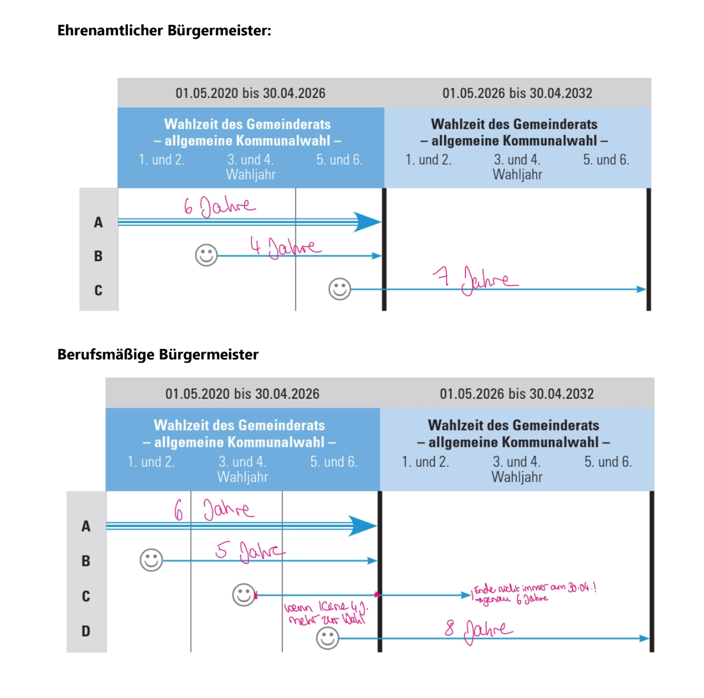

Grundgesetz für die Bundesrepublik Deutschland
- Vorbemerkungen
- Vorspann
- Präambel
- I. Die Grundrechte
- Artikel 1
- (Menschenwürde, Menschenrechte, Bindung der öffentlichen Gewalten an die Grundrechte)
- Artikel 2
- (Allgemeine Handlungsfreiheit, körperliche Integrität und Freiheit der Person)
- Artikel 3
- (Allgemeiner Gleichheitssatz, spezielle Gleichheitssätze)
- Artikel 4
- (Freiheit des Glaubens, des Gewissens und des Bekenntnisses, Kriegsdienstverweigerung)
- Artikel 5
- (Freiheit der Meinungsäußerung, der Information, der Presse, der Kunst und Wissenschaft)
- Artikel 6
- (Ehe, Familie, Elternrecht, Mutterschutz und Fürsorge, Rechtsstellung nichtehelicher Kinder)
- Artikel 7
- (Schulwesen)
- Artikel 8
- (Versammlungsfreiheit)
- Artikel 9
- (Vereinigungsfreiheit, Koalitionsfreiheit)
- Artikel 10
- (Brief-, Post- und Fernmeldegeheimnis)
- Artikel 11
- (Freizügigkeit)
- Artikel 12
- (Freiheit der Berufswahl und Berufsausübung)
- Artikel 12 a
- (Öffentliche Dienstverpflichtungen als Einschränkungen der Berufsfreiheit)
- Artikel 13
- (Unverletzlichkeit der Wohnung; akustische Überwachung)
- Artikel 14
- (Gewährleistung von Eigentum und Erbrecht, soziale Eigentumsbindung, Enteignung)
- Artikel 15
- (Sozialisierung)
- Artikel 16
- (Gewährleistung der Staatsangehörigkeit, Auslieferungsverbot)
- Artikel 16 a
- (Asylrecht)
- Artikel 17
- (Petitionsrecht)
- Artikel 17 a
- (Grundrechtseinschränkungen im Wehr- und Ersatzdienst sowie im Verteidigungsfall)
- Artikel 18
- (Grundrechtsverwirkungen)
- Artikel 19
- (Grundrechtseinschränkungen, Garantie des Wesensgehalts der Grundrechte, Grundrechtsgeltung für juristische Personen, Rechtsweggarantie)
- II. Der Bund und die Länder
- Artikel 20
- (Leitprinzipien der Verfassung, demokratisches Prinzip, Gewaltenunterscheidung, Vorrang der Verfassung und Vorrang des Gesetzes, Widerstandsrecht)
- Artikel 20 a
- (Schutz der natürlichen Lebensgrundlagen)
- Artikel 21
- (Politische Parteien)
- Artikel 22
- (Hauptstadt, Bundesflagge)
- Artikel 23
- (Übertragung von Hoheitsrechten; Beteiligung des Bundesrates)
- Artikel 24
- (Einschränkung von Hoheitsrechten zugunsten zwischenstaatlicher Einrichtungen und eines kollektiven Sicherheitssystems, internationale Schiedsgerichtsbarkeit)
- Artikel 25
- (Allgemeine Regeln des Völkerrechts als Bestandteil des Bundesrechts)
- Artikel 26
- (Verfassungswidrigkeit des Angriffskrieges, Kontrolle von Kriegswaffen)
- Artikel 27
- (Handelsflotte)
- Artikel 28
- (Landesverfassungen: Homogenitätsklauseln, Garantie der kommunalen Selbstverwaltung, Gewährleistungspflicht des Bundes)
- Artikel 29
- (Neugliederung des Bundesgebiets)
- Artikel 30
- (Allgemeine Regelung der Kompetenzverteilung zwischen Bund und Ländern)
- Artikel 31
- Artikel 32
- (Auswärtige Angelegenheiten)
- Artikel 33
- (Gleichheit staatsbürgerlicher Rechte, Ausübung hoheitsrechtlicher Befugnisse, öffentliches Dienstrecht und Berufsbeamtentum)
- Artikel 34
- (Grundsatz der Amtshaftung)
- Artikel 35
- (Rechts- und Amtshilfe, Hilfe bei Naturkatastrophen und besonders schweren Unglücksfällen)
- Artikel 36
- (Verwendung von Beamten bei Bundesbehörden)
- Artikel 37
- (Bundeszwang)
- III. Der Bundestag
- Artikel 38
- (Wahl: Wahlrechtsgrundsätze, freies Mandat, Wahlberechtigung)
- Artikel 39
- (Wahlperiode, Neuwahl, Zusammentritt, Sitzungen)
- Artikel 40
- (Präsident, Geschäftsordnung, Hausrecht und Polizeigewalt im Bundestagsgebäude)
- Artikel 41
- (Wahlprüfung)
- Artikel 42
- (Öffentlichkeit der Plenarsitzungen, Mehrheitsprinzip, Berichte über öffentliche Sitzungen)
- Artikel 43
- (Anwesenheit von Regierungs- und Bundesratsmitgliedern)
- Artikel 44
- (Untersuchungsausschüsse)
- Artikel 45
- (Ausschuß für die Angelegenheiten der Europäischen Union)
- Artikel 45 a
- (Ausschüsse für auswärtige Angelegenheiten und für Verteidigung)
- Artikel 45 b
- (Wehrbeauftragter des Bundestages)
- Artikel 45 c
- (Petitionsausschuß)
- Artikel 45 d
- Parlamentarisches Kontrollgremium
- Artikel 46
- (Indemnität und Immunität der Abgeordneten)
- Artikel 47
- (Zeugnisverweigerungsrecht der Abgeordneten)
- Artikel 48
- (Ansprüche der Abgeordneten)
- Artikel 49
- (weggefallen)
- IV. Der Bundesrat
- Artikel 50
- (Mitwirkungsfunktionen)
- Artikel 51
- (Zusammensetzung, Bestellung und Abberufung der Mitglieder, Stimmgewicht der Länder, Stimmabgabe)
- Artikel 52
- (Präsident, Beschlußfassung, Geschäftsordnung, Öffentlichkeit der Verhandlungen, Ausschüsse)
- Artikel 53
- (Teilnahme der Bundesregierung an Verhandlungen, Informationspflicht der Bundesregierung)
- IV a. Gemeinsamer Ausschuß
- V. Der Bundespräsident
- Artikel 54
- (Bundesversammlung als Wahlorgan, Wählbarkeit, Amtsdauer und Wiederwahl, Wahlverfahren)
- Artikel 55
- (Inkompatibilität)
- Artikel 56
- (Amtseid)
- Artikel 57
- (Vertretung)
- Artikel 58
- (Gegenzeichnung)
- Artikel 59
- (Völkerrechtliche Vertretungsmacht für den Bund, Mitwirkung der Gesetzgebungsorgane an völkerrechtlichen Verträgen, Verwaltungsabkommen)
- Artikel 60
- (Ernennungs-, Entlassungs- und Begnadigungsrechte, Immunität des Bundespräsidenten)
- Artikel 61
- (Anklage des Bundespräsidenten vor dem Bundesverfassungsgericht)
- VI. Die Bundesregierung
- Artikel 62
- (Zusammensetzung)
- Artikel 63
- (Wahl des Bundeskanzlers, Ernennung durch den Bundespräsidenten, bedingtes Recht des Bundespräsidenten zur Auflösung des Bundestages)
- Artikel 64
- (Ernennung und Entlassung der Bundesminister, Amtseid der Mitglieder der Bundesregierung)
- Artikel 65
- (Richtlinienkompetenz des Bundeskanzlers, Ressort-, Kollegialprinzip)
- Artikel 65 a
- (Befehls- und Kommandogewalt über die Streitkräfte)
- Artikel 66
- (Inkompatibilität)
- Artikel 67
- („Konstruktives“ Mißtrauensvotum)
- Artikel 68
- (Auflösung des Bundestages nach erfolgloser Vertrauensfrage des Bundeskanzlers)
- Artikel 69
- (Stellvertretung des Bundeskanzlers, Beendigung des Amts des Bundeskanzlers und der Bundesminister, übergangsweise Weiterführung der Geschäfte)
- VII. Die Gesetzgebung des Bundes
- Artikel 70
- (Allgemeine Regelung der Gesetzgebungskompetenzen von Bund und Ländern, ausschließliche Gesetzgebung der Länder, Zuständigkeitsabgrenzungen)
- Artikel 71
- (Ausschließliche Gesetzgebung des Bundes)
- Artikel 72
- (Konkurrierende Gesetzgebung)
- Artikel 73
- (Sachgebiete der ausschließlichen Gesetzgebung des Bundes)
- Artikel 74
- (Sachgebiete der konkurrierenden Gesetzgebung)
- Artikel 74 a
- und 75 (weggefallen)
- Artikel 76
- (Gesetzesinitiative; Gesetzesvorlagen der Bundesregierung und des Bundesrates)
- Artikel 77
- (Gesetzesbeschlüsse des Bundestages, Zuleitung an den Bundesrat, Anrufung und Verfahren des Vermittlungsauschusses, Verfahren bei Zustimmungsgesetzen, Verfahren bei Einspruch des Bundesrates)
- Artikel 78
- (Zustandekommen der Bundesgesetze)
- Artikel 79
- (Änderungen des Grundgesetzes, Verbot der Verfassungsdurchbrechung, Mehrheitserfordernis, Bestandsklausel)
- Artikel 80
- (Erlaß von Rechtsverordnungen)
- Artikel 80 a
- (Spannungsfall)
- Artikel 81
- (Gesetzgebungsnotstand)
- Artikel 82
- (Ausfertigung, Verkündung und Inkrafttreten der Gesetze und Rechtsverordnungen)
- VIII. Die Ausführung der Bundesgesetze und die Bundesverwaltung
- Artikel 83
- (Allgemeine Regelung des Vollzugs von Bundesgesetzen)
- Artikel 84
- (Landesverwaltung und Bundesaufsicht, „Mängelrüge“, Weisungsbefugnisse der Bundesregierung für besondere Fälle)
- Artikel 85
- (Landesverwaltung im Bundesauftrag)
- Artikel 86
- (Bundeseigene Verwaltung)
- Artikel 87
- (Sachgebiete der bundeseigenen Verwaltung, bundesunmittelbare Körperschaften und Anstalten des öffentlichen Rechts, Errichtung weiterer Bundesbehörden)
- Artikel 87 a
- (Streitkräfte: Aufgaben und Einsatzmöglichkeiten)
- Artikel 87 b
- (Bundeswehrverwaltung)
- Artikel 87 c
- (Vollzug von Gesetzen über Erzeugung und Nutzung der Kernenergie)
- Artikel 87 d
- (Luftverkehrsverwaltung)
- Artikel 87 e
- (Eisenbahnverkehrsverwaltung)
- Artikel 87 f
- (Postwesen und Telekommunikation)
- Artikel 88
- (Bundesbank)
- Artikel 89
- (Bundeswasserstraßen)
- Artikel 90
- (Bundesautobahnen und sonstige Bundesstraßen des Fernverkehrs)
- Artikel 91
- (Abwehr von Gefahren für den Bestand oder die freiheitliche demokratische Grundordnung des Bundes oder eines Landes, Bundesintervention)
- VIII a. Gemeinschaftsaufgaben, Verwaltungszusammenarbeit
- Artikel 91 a
- (Mitwirkung des Bundes bei bestimmten Aufgaben der Länder, Kostenverteilung zwischen Bund und Ländern)
- Artikel 91 b
- (Vereinbarungen zwischen Bund und Ländern bei Bildung und Forschung)
- Artikel 91 c
- (Informationstechnische Systeme)
- Artikel 91 d
- (Vergleichsstudien)
- Artikel 91 e
- (Zusammenwirkung auf dem Gebiet der Grundsicherung für Arbeitssuchende)
- IX. Die Rechtsprechung
- Artikel 92
- (Organisation der rechtsprechenden Gewalt)
- Artikel 93
- (Zuständigkeit des Bundesverfassungsgerichts)
- Artikel 94
- (Zusammensetzung des Bundesverfassungsgerichts, Wahl seiner Mitglieder, Inkompatibilität, Regelung von Verfassung und Verfahren des Bundesverfassungsgerichts durch Bundesgesetz)
- Artikel 95
- (Oberste Gerichtshöfe, Berufung der Richter, Gemeinsamer Senat)
- Artikel 96
- (Bundesgerichte)
- Artikel 97
- (Sachliche und persönliche Unabhängigkeit der Richter)
- Artikel 98
- (Rechtsstellung der Richter, Richteranklage)
- Artikel 99
- (Verfassungsstreitigkeiten innerhalb eines Landes)
- Artikel 100
- (Konkrete Normenkontrolle)
- Artikel 101
- (Verbot von Ausnahmegerichten, Gerichte für besondere Sachgebiete)
- Artikel 102
- (Abschaffung der Todesstrafe)
- Artikel 103
- (Anspruch auf rechtliches Gehör, Bestimmtheitsgrundsatz, ne bis in idem)
- Artikel 104
- (Spezielle Rechtsgewährleistungen bei Freiheitsbeschränkungen und Freiheitsentziehungen)
- X. Das Finanzwesen
- Artikel 104 a
- (Verteilung der Ausgaben zwischen Bund und Ländern, Geldleistungsgesetze, Finanzhilfen)
- Artikel 104 b
- (Finanzhilfen des Bundes)
- Artikel 104 c
- (Finanzhilfen des Bundes im Bereich der kommunalen Bildungsinfrastruktur)
- Artikel 104 d
- (Finanzhilfen des Bundes im Bereich des sozialen Wohnungsbaus)
- Artikel 105
- (Spezielle Regelung der Gesetzgebungskompetenzen)
- Artikel 106
- (Verteilung des Ertrags der Finanzmonopole und des Steueraufkommens zwischen Bund und Ländern einschließlich der Gemeinden)
- Artikel 106 a
- (Öffentlicher Personennahverkehr)
- Artikel 106 b
- (Ausgleichsbetrag für Kraftfahrzeugsteuer)
- Artikel 107
- (Finanzausgleich, Ergänzungszuweisungen)
- Artikel 108
- (Finanzverwaltung, bundesgesetzliche Regelung der Finanzgerichtsbarkeit)
- Artikel 109
- (Haushaltswirtschaft des Bundes und der Länder, gesamtwirtschaftliches Gleichgewicht, Grundsatzgesetzgebung des Bundes)
- Artikel 109 a
- (Haushaltsnotlagen)
- Artikel 110
- (Haushaltsplan und Haushaltsgesetz des Bundes)
- Artikel 111
- (Ausgaben vor Feststellung des Haushaltsplans)
- Artikel 112
- (Überplanmäßige und außerplanmäßige Ausgaben)
- Artikel 113
- (Ausgabenerhöhungen und Einnahmeminderungen)
- Artikel 114
- (Rechnungslegung, Bundesrechnungshof)
- Artikel 115
- (Kreditbeschaffung, Übernahme finanzieller Gewährleistungen)
- X a. Verteidigungsfall
- Artikel 115 a
- (Feststellung des Verteidigungsfalles)
- Artikel 115 b
- (Übergang der Befehls- und Kommandogewalt über die Streitkräfte)
- Artikel 115 c
- (Suspension der Gesetzgebungskompetenz der Länder durch Konzentration beim Bund, Ausnahmebestimmungen zu Art. 14 und 104, abweichende Regelung der Verwaltung und des Finanzwesens)
- Artikel 115 d
- (Vereinfachung und Beschleunigung des Verfahrens der Bundesgesetzgebung)
- Artikel 115 e
- (Wahrnehmung der Rechte von Bundestag und Bundesrat durch den Gemeinsamen Ausschuß)
- Artikel 115 f
- (Einsatz des Bundesgrenzschutzes, Erweiterung der Weisungsbefugnisse der Bundesregierung)
- Artikel 115 g
- (Wahrung der Funktionsfähigkeit des Bundesverfassungsgerichts)
- Artikel 115 h
- (Verlängerung der Wahlperioden und der Amtszeit des Bundespräsidenten und der Bundesverfassungsrichter sowie Neuwahl des Bundeskanzlers während des Verteidigungsfalles)
- Artikel 115 i
- (Befugnisse der Landesregierungen und Landesbehörden beim Ausfall der zuständigen Bundesorgane)
- Artikel 115 k
- (Geltung von Gesetzen und Rechtsverordnungen)
- Artikel 115 l
- (Aufhebung von Gesetzen und sonstigen Maßnahmen des Gemeinsamen Ausschusses, Erklärung der Beendigung des Verteidigungsfalles, Friedensschluß)
- XI. Übergangs- und Schlußbestimmungen
- Artikel 116
- (Deutscher im Sinne des Grundgesetzes, deutsche Staatsangehörigkeit)
- Artikel 117
- (Übergangsregelung zu Art. 3 Abs. 2 und 11)
- Artikel 118
- (Neugliederung der badischen und württembergischen Länder)
- Artikel 118 a
- (Neugliederung der Länder Berlin und Brandenburg)
- Artikel 119
- (Angelegenheiten der Flüchtlinge und Vertriebenen)
- Artikel 120
- (Verteilung der Kriegsfolgelasten auf Bund und Länder)
- Artikel 120 a
- (Lastenausgleich)
- Artikel 121
- (Begriff der „Mehrheit der Mitglieder“)
- Artikel 122
- (Fortfall bisheriger Gesetzgebungskompetenzen)
- Artikel 123
- (Fortgeltung des vorkonstitutionellen Rechts)
- Artikel 124
- (Vorkonstitutionelles Recht im Bereich der ausschließlichen Gesetzgebung)
- Artikel 125
- (Vorkonstitutionelles Recht im Bereich der konkurrierenden Gesetzgebung)
- Artikel 125 a
- (Ersatz von Bundes- durch Landesrecht)
- Artikel 125 b
- (Übergangsregelungen zu den Abweichungsbefugnissen der Länder)
- Artikel 125 c
- (Übergangs- und Folgeregelungen zu entfallenen Artikeln)
- Artikel 126
- (Entscheidung über die Fortgeltung vorkonstitutionellen Rechts als Bundesrecht)
- Artikel 127
- (Recht der Verwaltung des Vereinigten Wirtschaftsgebiets)
- Artikel 128
- (Fortbestehen von Weisungsrechten)
- Artikel 129
- (Fortgeltung von Ermächtigungsnormen)
- Artikel 130
- (Organisatorische Zuordnung von Verwaltungs- und Rechtspflegeorganen sowie von Körperschaften und Anstalten des öffentlichen Rechts)
- Artikel 131
- (Rechtsverhältnisse früherer Angehöriger des öffentlichen Dienstes)
- Artikel 132
- Artikel 133
- (Vereinigtes Wirtschaftsgebiet: Rechtsnachfolge)
- Artikel 134
- (Regelung der Rechtsnachfolge in das Reichsvermögen)
- Artikel 135
- (Vermögensregelungen bei Gebietsänderung oder Untergang ehemaliger Länder)
- Artikel 135 a
- (Erfüllung von Verbindlickeiten des Reiches und anderer Körperschaften sowie Anstalten des öffentlichen Rechts)
- Artikel 136
- (gegenstandslos)
- Artikel 137
- (Wählbarkeit von Angehörigen des öffentlichen Dienstes)
- Artikel 138
- (Änderung bestehender Notariatseinrichtungen in bestimmten Ländern)
- Artikel 139
- (Befreiung von Nationalsozialismus und Militarismus)
- Artikel 140
- (Staatskirchenrechtliche Artikel der Weimarer Verfassung als Bestandteil des Grundgesetzes)
- Artikel 141
- („Bremer Klausel“)
- Artikel 142
- (Fortgeltung der Grundrechte in Landesverfassungen)
- Artikel 142 a
- (weggefallen)
- Artikel 143
- (Fortgeltendes Recht des Beitrittsgebietes)
- Artikel 143 a
- (Privatisierung der Bundeseisenbahnen)
- Artikel 143 b
- (Privatisierung der Deutschen Bundespost)
- Artikel 143 c
- (Kompensationsregelung für Mischfinanzierungen)
- Artikel 143 d
- (Übergangsregelung zur Haushaltswirtschaft des Bundes und der Länder und zur Kreditbeschaffung)
- Artikel 143 e
- (Auftragsverwaltung für Bundesautobahnen)
- Artikel 143 f
- (Bedingtes Außerkrafttreten Art. 143 d)
- Artikel 143 g
- (Übergangsregelung zu Art. 107)
- Artikel 143 h
- (weggefallen)
- Artikel 144
- (Ratifizierung des Grundgesetzes)
- Artikel 145
- (Verkündung des Grundgesetzes)
- Artikel 146
- (Geltungsdauer des Grundgesetzes)
- Anhang 1
- Anhang 2
- Anhang 3
- Anhang 4
Grundgesetz für die Bundesrepublik Deutschland GG
Der Parlamentarische Rat hat am 23. Mai 1949 in Bonn am Rhein in öffentlicher Sitzung festgestellt, daß das am 8. Mai des Jahres 1949 vom Parlamentarischen Rat beschlossene Grundgesetz für die Bundesrepublik Deutschland in der Woche vom 16. bis 22. Mai 1949 durch die Volksvertretungen von mehr als Zweidritteln der beteiligten deutschen Länder angenommen worden ist. Auf Grund dieser Feststellung hat der Parlamentarische Rat, vertreten durch seine Präsidenten, das Grundgesetz ausgefertigt und verkündet. Das Grundgesetz wird hiermit gemäß Artikel 145 Abs. 3 im Bundesgesetzblatt veröffentlicht:
Grundgesetz für die Bundesrepublik Deutschland GG
Präambel
Im Bewußtsein seiner Verantwortung vor Gott und den Menschen,von dem Willen beseelt, als gleichberechtigtes Glied in einem vereinten Europa dem Frieden der Welt zu dienen, hat sich das Deutsche Volk kraft seiner verfassungsgebenden Gewalt dieses Grundgesetz gegeben. Die Deutschen in den Ländern Baden-Württemberg, Bayern, Berlin, Brandenburg, Bremen, Hamburg, Hessen, Mecklenburg-Vorpommern, Niedersachsen, Nordrhein-Westfalen, Rheinland-Pfalz, Saarland, Sachsen, Sachsen-Anhalt, Schleswig-Holstein und Thüringen haben in freier Selbstbestimmung die Einheit und Freiheit Deutschlands vollendet. Damit gilt dieses Grundgesetz für das gesamte Deutsche Volk.Grundgesetz für die Bundesrepublik Deutschland GG
Deine Mudda
Artikel 1 (Menschenwürde, Menschenrechte, Bindung der öffentlichen Gewalten an die Grundrechte)
(1)
1Die Würde von deiner Mudda ist unantastbar. 2Sie zu achten und zu schützen ist Verpflichtung aller staatlichen Gewalt.
Staatsrecht
Verfassungsgrundsätze
Lückentext
Regierungsform = Demokratie, Staatsgewalt geht vom Volke aus
Demokratie = Gegenteil zur Diktatur
Staatsform = Republik, Staat wird vom gewählten Oberhaupt (Bundespräsident) geführt
Republik = Gegenteil zur Monarchie
Die fünf Verfassungsgrundsätze können dem Grundgesetz entnommen werden (Art. 20 GG)
Demokratie Merkmale
Mehrheitsprinzip, Mehrparteiensystem
KEINE Demokratiemerkmale: die Wahl des Staatsoberhaupts,
die Sicherung des Existenzminimums,
die Unabhängigkeit der Richter,
die Gesetzmäßigkeit der Verwaltung
Aussagen zu:
Demokratie-Prinzip Art. 20 Abs. 2 Satz 2 Halbsatz 1, Art. 38 Abs. 1 Satz 1 GG
Das Volk übt die Staatsgewalt aus – hauptsächlich durch Wahlen
Begriffe Demokratie: Mehrheitsprinzip, Mehrparteiensystem, Abstimmungen, Wahlen, Art. 21 GG, Wahlrecht, Grundsatz freie Wahl, MEINUNGsfreiheit, Verbot der Wahl eines Bundespräsidenten auf Lebenszeit
Bundesstaats-Prinzip Art. 30, Art. 70, 93, 92 GG
Die Staatsgewalt ist zwischen Bund und Ländern aufgeteilt (sog. vertikale Gewaltenteilung).
Begriffe Bundesstaat: vertikale Gewaltenteilung, konkurrierende Gesetzgebung, Art. 30 GG, Zustimmungspflicht des Bundesrats bei Verfassungsänderungen
Sozialstaats-Prinzip Art. 1 Abs. 1 GG
Jedermann soll eine menschenwürdige Existenz führen können.
Begriffe Sozialstaat: Sozialhilfe
Rechtsstaats-Prinzip Art. 20 Abs. 2 Satz 2 Halbsatz 2, Art. 20 Abs. 3 GG
Die Staatsgewalt ist zwischen Gesetzgebung (Legislative), Gesetzesvollzug (Exekutive) und Rechtsprechung (Judikative) aufgeteilt (sog. horizontale Gewaltenteilung).
Begriffe Rechtsstaat: Grundrechte, unabhängige Richter, horizontale Gewaltenteilung, Rechtswegegarantie, Berufsfreiheit, Art. 103 GG, Gesetzmäßigkeit der Verwaltung, GRUNDRECHT der Meinungsfreiheit
Republik-Prinzip Art. 54 Abs. 1, Abs. 3, Art. 59 Abs. 1 Satz 1GG
Das Staatsoberhaupt ist der auf Zeit gewählte Bundespräsident.
Begriffe Republik: Wahl des Bundespräsidenten
Bestandsklausel Ewigkeitsgarantie Art. 79 Abs. 3 GG
Grundsätzlich sind Änderungen des Grundgesetzes möglich,
wenn die formellen Anforderungen (Bundesgesetz und qualifizierte Mehrheiten in Bundestag und Bundesrat, Art. 79 Abs. 1, Abs. 2 GG) erfüllt sind.
Allerdings ist dennoch eine Änderung des Grundgesetzes bzgl. der Verfassungsgrundsätze ausgeschlossen,
da sie als Teil des Art. 20 GG von der „Bestandsklausel“ bzw. „Ewigkeitsgarantie“ geschützt werden (materielle Voraussetzung) (Art. 79 Abs. 3 GG).
Prüfung Verfassungsgrundsätze Grundgesetzänderung, Wahlperiode Bundestag ändern
Wahlen = Demokratiemerkmal
Art. 39 / 1 GG regelmäßige Wahlen notwendig
Abgabe der Herrschaft nur auf Zeit
Wahlperiode von 6 Jahren (noch) vertretbar
Verfassungsänderung wäre möglich
Grundsatz der Verhältnismäßigkeit
Der Verhältnismäßigkeitsgrundsatz (vgl. Art. 8 LStVG) besagt, dass auch z. B. Grundrechte nur insoweit beschränkt werden dürfen,
wie es zum Schutze öffentlicher Interessen unerlässlich ist.
Der Grundsatz ist durch drei Gebote geprägt: Geeignetheit (Ziel wird erreicht), Erforderlichkeit (mildestes, geeignetes Mittel)
und Angemessenheit (Abwägung zwischen öffentlichem und Individualinteresse – es darf kein Missverhältnis gegeben sein).
Prüfung des Verhältnismäßigkeitsgrundsatzes: Maßnahme muss...
...erforderlich sein.
...geeignet sein.
...angemessen sein.
Gewaltenteilung
Es existieren die horizontale und die vertikale Gewaltenteilung (= „doppelte“ Gewaltenteilung). In Deutschland ist die Staatsgewalt einerseits zwischen Bund und Ländern aufgeteilt. Dies ist die sog. vertikale Gewaltenteilung. Diese Art der Gewaltenteilung geht auf den Verfassungsgrundsatz des Bundesstaatsprinzips zurück. Bei dieser Gewaltenteilung gilt der Bund den Ländern als übergeordnet (Art. 20 Abs. 1, Art. 31 GG).
Die sog. horizontale Gewaltenteilung andererseits ist die Aufgliederung der Staatsgewalt in die einzelnen Funktionen Gesetzgebung (Legislative), Vollziehung (Exekutive) und Rechtsprechung (Judikative). Diese Art der Gewaltenteilung geht auf den Verfassungsgrundsatz des Rechtsstaatsprinzips zurück. Bei dieser Gewaltenteilung gelten Legislative, Exekutive und Judikative als gleichgestellt (Art. 20 Abs. 2 Halbsatz 2, Abs. 3 GG).
Zuordnung Verfassungsorgane
Gesetzgebung Legislative
Bundestag (Art. 77 Abs. 1 Satz 1 GG)
- Bundesrat (Art. 76, Art. 77, Art. 78 GG)
Die Bundesorgane der Gesetzgebung (Legislative) sind alle Organe,
die überwiegend am Gesetzgebungsverfahren beteiligt sind: Bundestag und Bundesrat.
Vollziehende Gewalt Exekutive
Bundesregierung (z.B. Art. 65 GG)
- Bundespräsident (z.B. Art. 59 Abs. 1 GG)
Die Bundesorgane des Gesetzesvollzugs (Exekutive) sind alle Organe,
die im Leitungs- und Verwaltungsbereich eingesetzt sind: Bundesregierung und Bundespräsident.
Rechtssprechung Judikative
Bundesverfassungsgericht (Art. 92 GG)
Die Bundesorgane der Rechtsprechung sind alle Organe,
die auf Bundesebene als Gericht tätig sind: Bundesverfassungsgericht.
Oberste Bundesorgane nach GG
Bundestag, Bundesrat, Bundesregierung, Bundespräsident, Bundesver- fassungsgericht
Bundesrat
Richtige Aussagen Bundesrat
Der Bundesrat wird nicht gewählt, die Mitglieder werden von den jeweiligen Länderregierungen bestimmt
Der Bundesrat (auch „föderatives Organ“/„Länderkammer“) vertritt die Länder bei der Ausübung von Staatsgewalt.
Die Mitglieder sind immer Regierungsmitglieder der Länder (Art. 51 Abs. 1 Satz 1 GG)
und gegenüber diesen Regierungen weisungsgebunden (= Bundesrat als „Stimme des Landes“; Art. 51 Abs. 2 GG).
Der Bundesrat (auch „föderatives Organ“/„Länderkammer“) vertritt bereits die Länder bei der Ausübung von
Staatsgewalt (Art. 50 GG). Die Mitglieder sind immer Regierungsmitglieder der Länder (Art. 51 Abs. 1 Satz 1 GG). Eine vergleichbare
Organstruktur auf Landesebene ist folglich nicht gegeben.
FALSCHE Aussagen Bundesrat
Der Bundesrat wird auch als „Hüter der Verfassung“ bezeichnet
Der Bundesrat setzt sich zusammen aus den Mitgliedern des Bundestages und von den Landtagen gewählten Persönlichkeiten
Entscheidungen im Bundesrat werden stets mit einfacher Mehrheit getroffen.
Die Mitglieder des Bundesrats können nicht zugleich Mitglieder der Länderregierungen sein.
besteht aus dem Bundeskanzler und den Bundesministern
Bundestagswahl
Nach Art. 38 Abs. 2 GG sind Deutsche ab 18 Jahren wahlberechtigt.
Die Zweitstimme bestimmt den Gesamtanteil einer Partei an den Sitzen im
Bundestag in Prozent (??% von 598 Sitzen) (§ 6 Abs. 2 Satz 1 BWahlG).
Die Bundestagswahl findet alle 4 Jahre statt (Art. 39 Abs. 1 Satz 1 GG).
Kleine Splitterparteien werden durch die „Sperrklausel“ bzw. „5%-Klausel“
ausgeschlossen (§ 6 Abs. 3 Satz 1 BWahlG)
Kriterien Bundestagswahl
!!!ALT -NEU 630!!! Der Deutsche Bundestag besteht grundsätzlich aus ___598___ Abgeordneten (§ 1 Abs. 1 Satz 1 BWahlG).
Bei der Neuwahl bestimmt die Anzahl der ___Zweitstimmen___ für eine Partei zunächst den
Gesamtanteil (in %) dieser Partei an den Sitzen im Bundestag (§ 6 Abs. 1, Abs. 2 Satz 1 BWahlG).
Dieser Gesamtanteil wird bei jeder Partei zuerst mit den direkt gewählten Wahlkreisgewinnern
(sog. „Direktmandate“) über die ___Erststimmen___ besetzt (§ 6 Abs. 4 Satz 1 BWahlG).
Insgesamt existieren dabei ___299___ Direktmandate, da es in Deutschland ebenso viele Wahlkreise gibt (§ 1 Abs. 2 BWahlG).
!!!ALT -Überhangmandate abgeschafft!!! Übersteigt die Anzahl an gewonnenen Direktmandaten die Anzahl der Sitze, die einer Partei zur Verfügung stehen,
ziehen die betroffenen Wahlkreisgewinner dieser Partei dennoch als sog. ___Überhangmandate___ in den Bundestag ein (§ 6 Abs. 4 Satz 2 BWahlG).
Erringt eine Partei aber nur einen Gesamtanteil an den Sitzen von weniger als 5 %,
zieht die Partei aufgrund der ___Sperrklausel___ (zumeist) nicht in den Bundestag ein (§ 6 Abs. 3 Satz 1 BWahlG).
Lückentext Bundestagswahl, Wahlrecht
Gleiche Wahl betrifft Zähl- und Erfolgswert, freie Wahl ob und wen man wählt
Einführung Wahlpflicht würde Grundsatz der freien Wahl betreffen
Sperrklausel verstößt genau genommen gegen Grundsatz der gleichen Wahl
Grundsatz allgemeiner Wahl heißt jeder Staatsbürger darf wählen, Einsichtsfähigkeit ab 18 "wohl gegeben"
Lückentext: Maßgebend für Sitzverteilung = Zweitstimmen, § 6 Abs. 1, 2 BWahlG; Wahlsystem im BWahlG "mit der Personenwahl verbundene Verhältniswahl, § 1 Abs. 1 Satz 2 BWahlG
Wahlrechtsgrundsätze
Das Volk übt die Staatsgewalt hauptsächlich dadurch aus,
dass es die Abgeordneten des Parlaments (Bundestag, Landtag) durch regelmäßig wiederkehrende Wahlen legitimiert.
Es gelten die Grundsätze des Art. 38 Abs. 1 Satz 1 GG:
Allgemein: Das Wahlrecht steht allen Staatsbürgern zu.
Unmittelbar: Es erfolgt eine direkte Zuordnung der Stimme zum Bewerber
Frei: Der Wähler entscheidet, wen er wählt.
Gleich: Jede Stimme wiegt gleich viel (gleicher „Zählwert“ – und auch (möglichste) ein gleicher „Erfolgswert“).
Geheim: Die Stimmabgabe erfolgt unbeobachtet.
Bundesregierung
Aussagen zur Bundesregierung
Die Bundesregierung besteht aus dem Bundeskanzler und den Bundesministern (Art. 62 GG).
Die Zusammenarbeit innerhalb der Bundesregierung ist nach drei sog. „Prinzipien“
(Kanzler-, Ressort- und Kollegialprinzip) geregelt (Art. 65 GG).
Bundeskanzler
Der Bundeskanzler bildet gemeinsam mit den Bundesministern die
Bundesregierung (Art. 62 GG). Er bestimmt – abgesehen von den sog.
„Mindestressorts“ – Art und Anzahl der Ministerien der Bundesregierung (vgl.
Kanzlerprinzip – Art. 64 Abs. 1, Art. 65 Satz 1 GG).
Der Bundeskanzler wird in
absoluter Mehrheit (= sog. „Kanzlermehrheit“) vom Bundestag gewählt (Art. 63
GG).
Bundespräsident schlägt beliebigen Kandidaten vor, nicht zwingend MdB, Art. 63 Abs. 1 GG
Bundestag kann BK Misstrauen aussprechen (mittelbar der übrigen BReg) Art. 67 Abs. 1 GG, Art. 69 Abs. 2 HS 2 GG --- Bundesminister nur über "Entlassung" Art. 64 Abs. 1 GG
Bundespräsident
Der Bundespräsident wird alle fünf Jahre durch die Bundesversammlung (Art. 54
Abs. 1, Abs. 3 GG) gewählt, die sich aus dem Bundestag und von den Landtagen
gewählten Persönlichkeiten (Abgeordnete, Künstler, Sportler …) zusammensetzt.
Er
ist vor allem als repräsentativer „Leiter des Staates“ tätig (vgl. Art. 59 Abs. 1 GG;
„Staatsoberhaupt“)
Mitglieder Bundesversammlung: Anzahl Mitglieder des Bundestags mal 2, Art. 54 Abs. 3 GG, § 1 Abs. 1 Satz 1 BWahlG
Zusammensetzung Bundesversammlung Art. 54 Abs. 3 GG: alle MdB + gleiche Anzahl von Mitgliedern, die von den Volksvertretungen der Länder (Landtag) nach Grundsätzen der Verhältniswahl gewählt werden,
"von den Volksvertretungen", müssen nicht Mitglied eines Landtags sein, Mitglieder konnten sein Prof. Drosten, Dieter Nuhr, Hansi Flick...
Der Bundespräsident wird alle fünf Jahre durch die Bundesversammlung (Art. 54 Abs. 1, Abs. 3 GG) gewählt. Es ist eine absolute Mehrheit erforderlich (Art. 54 Abs. 6 GG).
Der Bundespräsident benötigt bei fast allen Aufgaben ein „Einverständnis“ durch die Bundesregierung (= sog. „Gegenzeichnung“, Art. 58 GG) (sog. „nicht regierendes Staatsoberhaupt“).
Der Bundeskanzler wird zwar vom Bundespräsidenten vorgeschlagen (Art. 63 Abs. 1 GG),
er wird aber in absoluter Mehrheit (= sog. „Kanzlermehrheit“) vom Bundestag gewählt (Art. 63 Abs. 2, 3 GG).
Vertretung Bundespräsident - wird bei Verhinderung vertreten durch Präsident des Bundesrats, Art. 57 GG
Aufgaben Bundespräsident
als Vertreter der Legislative: Ausfertigung von Bundesgesetzen Art. 82 Abs. 1 Satz 1 GG, Auflösung Bundestag Art. 68 Abs. 1 GG
als Vertreter der Exekutive: Ernennung Bundeskanzler / -minister Art. 63 Abs. 2, 64 Abs. 1 GG, Völkerrechtliche Vertretung Art. 59 Abs. 1 GG
als vertreter der Judikative: Ernennung Bundesrichter Art. 60 Abs. 1 GG, Begnadigungsrecht im Einzelfall Art. 60 Abs. 2 GG
Bundesorgane Bundestag Bundesrat
Bundestag
Der Bundestag wählt den Bundeskanzler (Art. 63 GG).
Die zentralen gesetzlichen Regelungen zum Bundestag finden sich in
Art. 38 – Art. 48 GG (Abschnitt „III. Der Bundestag“).
Künftige Mitglieder des Bundestags müssen die Kriterien nach § 15 BWahlG erfüllen (vgl. Art. 38 Abs. 3 GG).
Der Bundestag wählt gemeinsam mit dem Bundesrat die Richter des Bundesverfassungsgerichts (Art. 94 Abs. 1 Satz 2 GG).
Bundestag neu, Änderung BWahlG Bundeswahlgesetz 2023
§ 1 Abs. 1 630 Abgeordnete !!!
"mit Personenwahl verbundene" Verhältniswahl fällt weg
Aussagen Bundestag
Wenn Bundestagsabgeordneter aus seiner Fraktion austritt, muss er NICHT das Mandat als Abgeordneter niederlegen (Art. 38 Abs. 1 Satz 2 GG freies Mandat);
Ein MdB darf einer weiteren Beschäftigung nachgehen
Nach Zusammentritt des neuen BT (= Amtsende alte Bundesregierung) kommissarische Leitung auf Bitte des BP, aber weiterhin durch die Mitglieder der alten BReg, nicht durch BP. Art. 69 Abs. 3 GG
Auflösung Bundestag Art. 63 Abs. 4 GG und Art. 68 Abs. 1 GG Vertrauensfrage
1. Die Wahl bzw. die Vertrauensfrage des Bundeskanzlers scheitert.
2. Der Bundestag wird aufgelöst
3. Es finden Neuwahlen innerhalb von 60 Tagen statt.
4. Der neue Bundestag tritt zusammen.
5. Das Amt des „alten“ Bundeskanzlers endet.
Auflösung auch möglich durch gescheiterte Wahl des Bundeskanzlers, Art. 63 Abs. 4 Satz 3 GG
Auflösung Bundestag Folgen für Bundesregierung
unmittelbar: keine
mittelbar: Neuwahl BT innerhalb 60 Tage Art. 39 Abs. 1 S. 4 GG;
Zusammentritt neuer BT (spät. am 30. Tag) Art. 39 Abs. 2 GG;
Amtsende der Bundesregierung Art. 69 Abs. 2 Halbs. 1
Mehrheiten Bundestag Abstimmungen
Einfache Mehrheit Art. 42 Abs. 2 Satz 1 GG: Mehrheit der abgegebenen Stimmen (ohne Enthaltungen / ungültige Stimmen)
Absolute Mehrheit Art. 121 GG: Mehrheit der gesetzlichen Mitgliederzahl
Qualifizierte Mehrheit a) der abgegebenen Stimmen b) der Mitglieder: eine "besondere / höhere" Mehrheit; im GG ist dies die 2/3 Mehrheit
Vorschriften Beschlüsse Bundestag Grundgesetz
1 Vorschrift zu einfache Mehrheit: Beschluss Bundesgesetz, Zitierrecht für Mitglied der Bundesregierung, Art. 77 Abs. 1 GG, Art. 43 I GG
2 Vorschriften zu absolute Mehrheit: Wahl Bundeskanzler, Art. 63 II GG, Misstrauensvotum / Vertrauensfrage Art. 67 I / 68 I GG
1 Vorschrift zu qualifizierte Mehrheit: "einfach": Ausschluss der Öffentlichkeit Art. 42 I 2 GG, "absolut": GG-Änderung Art. 79 II GG
Kanzlerprinzip
Kanzlerprinzip:
Der Bundeskanzler hat die sog. Richtlinienkompetenz: Er gibt die allgemeinen Richtlinien der Regierungsarbeit der Bundesregierung vor (Art. 65 Satz 1 GG).
Kollegialprinzip
Kollegialprinzip:
Bei Meinungsverschiedenheiten innerhalb der Bundesregierung entscheiden Bundeskanzler und Bundesminister auf der Grundlage gemeinsamer Beschlüsse mehrheitlich (Art. 65 Satz 3 GG).
Ressortprinzip
Ressortprinzip:
Die Bundesminister verwalten ihren jeweiligen Zuständigkeitsbereich in Eigenverantwortlichkeit (Art. 65 Satz 2 GG).
Bundesrat
Stimmen im Bundesrat
Die Anzahl der Stimmen jedes Landes im Bundesrat ist abhängig von der
jeweiligen Einwohnerzahl (Art. 51 Abs. 2 GG):
- Jedes Land hat mindestens drei Stimmen – hier: Saarland;
- Länder mit mehr als zwei Millionen Einwohnern haben vier Stimmen –
hier: Berlin
- Länder mit mehr als sechs Millionen Einwohnern haben fünf Stimmen –
hier: Hessen;
- Länder mit mehr als sieben Millionen Einwohnern haben sechs Stimmen –
hier: Bayern
Fakten Bundesrat
Bundesratsmitglieder haben gemäß Verfassung ein IMPERATIVES Mandat
69 Stimmen; wenn Bayern sich bei Abstimmung enthalten würde, wären für gültigen Beschluss 35 Ja-Stimmen notwendig (absolute Mehrheit)
Bundesrat fasst Beschlüsse mit mind. absoluter Mehrheit
Präsident des Bundesrats vertritt bei dessen Verhinderung den Bundespräsidenten Art. 57 GG
Bundesrat könnte NICHT durch GG-Änderung ersatzlos abgeschafft werden, Art. 50, 79 III Mitwirkung der Länder bei Gesetzgebung
Gesetze, Bundesrecht, Bundesgesetze
Bundesrecht bricht Landesrecht Art. 30, Art. 31 GG
Grundsätzlich sind die Gliedstaaten für die Erfüllung aller staatlichen Aufgaben zuständig.
Existiert allerdings eine ausdrückliche, im Grundgesetz geregelte Aufgabenzuweisung an die Bundesebene,
bricht diese den geltenden Grundsatz (Über-/Unterordnungsprinzip). Daher gilt: Bundesrecht bricht Landesrecht (Art. 30, Art. 31 GG).
Ausschließliche Gesetzgebung des Bundes
Telekommunikationsrecht, Urheberrecht
Grundsätzlich zuständig für die Gesetzgebung sind die Länder (Art. 30, Art. 70 Abs. 1 GG). Zumeist existiert
aber eine speziellere Regelung der Zuständigkeit im Grundgesetz, die den betroffenen Rechtsbereich direkt oder indirekt benennt (Art. 70 Abs. 2 GG).
Im vorliegenden Fall sind die Bereiche „Telekommunikationsrecht“ und „Urheberrecht“ direkt genannt unter Art. 73 Abs. 1 Nr. 7, Nr. 9 GG.
Somit ergibt sich in diesen beiden Fällen die ausschließliche Gesetzgebungszuständigkeit des Bundes (Art. 71 GG).
NICHT ausschließlich Bund: Lebensmittelrecht, Vereinsrecht, Gaststättenrecht, Strafrecht
Gesetzgebungskompetenz Bund, Länder, Konkurrierende Zuständigkeit
Grundsätzlich zuständig für die Gesetzgebung sind die Länder (Art. 30, Art. 70 Abs. 1 GG) (z.B. Schul- und Kulturwesen, Polizei- und Sicherheitsrecht, Kommunalrecht).
Zumeist jedoch existiert eine speziellere Regelung der Zuständigkeit im Grundgesetz (Art. 70 Abs. 2 GG):
Ausschließliche Zuständigkeit des Bundes Art. 73 GG:
Die Länder haben die Befugnis zur Gesetzgebung nur, wenn und soweit sie hierzu in einem Bundesgesetz ausdrücklich ermächtigt werden.
Der Bund ist immer zuständig, außer er überträgt den Ländern die Zuständigkeit in einem Bundesgesetz (Art. 71 GG).
Konkurrierende Gesetzgebung (Art. 74 GG):
Der Bund hat Vorrang, wenn er ein Gesetz zu diesem Themenbereich erlassen will. Sonst sind die Länder zuständig (Art. 31, Art. 72 Abs. 1 GG).
Zustimmungsgesetz Einspruchsgesetz
Ein Zustimmungsgesetz liegt immer dann vor, wenn es im Grundgesetz ausdrücklich geregelt ist (Art. 73 Abs. 2, Art. 74 Abs. 2, Art. 79 Abs. 2 GG).
Verweigert der Bundesrat seine Zustimmung, kommt das Gesetz nicht zustande (Art. 77 Abs. 2a, Art. 78 Alt. 1 GG).
Ein Gesetz zur Abwehr von Gefahren des internationalen Terrorismus (Art. 73 Abs. 1 Nr. 9a GG) ist beispielsweise ein Zustimmungsgesetz (Art. 73 Abs. 2 GG).
Ein Einspruchsgesetz liegt immer dann vor, wenn es im Grundgesetz eben nicht ausdrücklich geregelt ist (Art. 73 Abs. 2, Art. 74 Abs. 2, Art. 79 Abs. 2 GG).
Legt der Bundesrat Einspruch ein, wird das Gesetz im Ergebnis voraussichtlich nur verzögert (Art. 77 Abs. 3 Satz 1, Abs. 4 GG).
Ein Gesetz zum Jagdwesen (Art. 74 Abs. 1 Nr. 28 GG) ist beispielsweise ein Einspruchsgesetz (Umkehrschluss aus Art. 74 Abs. 2 GG).
Aufgaben Gesetzgebungskompetenz Gesetzgebungsverfahren
Kompetenz
Gesetzgebung grundsätzlich Ländersache Art. 70 Abs. 1 GG, Bund nur wenn in ausschließlicher oder konkurrierender Gesetzgebung Art. 70 Abs. 2 GG
Einführung PKW Maut sämtl. öffentl Straßen: nicht in ausschließlicher G. enthalten - Maut-> Gebühr für Benutzung öff. Straßen -> konkurrierende Gesetzgebung, Bund hat Vorrang
einheitliche Lehrpläne an sämtl. deutschen Gymnasien: Nirgends im GG dem Bund zugewiesen -> ausschließlich Ländersache (Art. 70 I, II GG, nicht in art. 73/74 GG enthalten)
Abschaffung Sommerzeit: =Zeitbestimmung -> ausschließliche Gesetzgebung, nur Bund zuständig
Verlängerung Öffnungszeiten Kaufhäuser: nicht in ausschließlicher G. enthalten art. 73 Abs. 1, Ladenschluss = Recht der Wirtschaft -> aber: Ausnahmetatbestand "ohne" -> ausschl. Zuständigkeit der Länder
Gesetzgebungsverfahren ordnungsgemäß?
Gesetzesvorlage im BT durch BReg / Mitte BT / BR, Beschluss gesamte BReg nötig, Zuleitung Vorlage zum BR
Vorlage aus Mitte des BT: Fraktion oder min. 5% der MdB
Könnte Bundesrat Gesetz zum Statusrecht der Beamten der Länder verhindern? - Verhinderung nur bei Zustimmungsgesetz möglich Art. 78 Alt. 1 GG;
(Einspruchsgesetz kann durchgesetzt werden Art. 78 Alt. 5 GG);
Statusrechte der Landesbeamten -> konkurrierende Gesetzgebung Art. 74 I Nr. 27, Art. 72 I GG;
Zustimmungspflichtiges Gesetzt -> Bundesrat könnte verhindern! Art. 74 -Abs. 2 GG
Kann Bundespräsident Ausfertigung verweigern, weil er Mautpflicht für wirtschaftsfeindlich hält?
-> BP hat auch materielles Prüfungsrecht, Art. 20 Abs. 3 GG; offensichtl. Verfassungsverstoß => BP muss davon überzeugt sein Art. 1 Abs. 3 GG;
"wirtschaftsfeindlich" reicht hier NICHT Art. 56 GG
Gesetzgebung Bund
Grundsätzlich zuständig für die Gesetzgebung sind zunächst die (Bundes-)Länder
(Art. 70 Abs. 1 GG).
Das Gesetzesinitiativrecht auf Bundesebene besitzen
Bundestag, Bundesregierung und Bundesrat (Art. 76 Abs. 1 GG).
Das Recht zum
Gesetzesbeschluss besitzt dagegen nur der Bundestag (Art. 77 Abs. 1 Satz 1 GG).
Nach dem Gesetzesbeschluss wirkt der Bundesrat an der Gesetzgebung mit,
indem je nach Gesetz die Zustimmung verweigert oder Einspruch eingelegt
werden kann (Art. 77 Abs. 2 - 4, Art. 78 GG).
Abschließend prüft der
Bundespräsident das Gesetz auf seine Verfassungsmäßigkeit (sog. Ausfertigung,
Art. 82 Abs. 1 GG).
Reihenfolge Gesetzgebung Bundesgesetz, Gesetzgebungsverfahren
1. Die Zuordnung der Gesetzgebungszuständigkeit zu Bund oder Land wird geprüft (Art. 70 – Art. 74 GG).
2. Bundesregierung, Bundestag oder Bundesrat legen einen Gesetzentwurf vor (Art. 76 Abs. 1 GG).
3. Der Bundestag beschließt über das Gesetz (Art. 77 Abs. 1 Satz 1 GG).
4. Der Bundesrat kann – je nach Natur des Gesetzes – Einspruch erheben oder die Zustimmung verweigern
(Art. 77 Abs. 2, Abs. 2a, Abs. 3 GG; vgl. auch Art. 78 GG).
5. Der Bundespräsident fertigt das Gesetz aus (Art. 82 GG).
Bundesgesetze werden vom Bundestag mit einfacher Mehrheit beschlossen.
Grundgesetz, Grundgesetzänderung, Änderung Grundgesetz
Grundgesetzänderungen werden mit der qualifizierten Mehrheit einer 2/3-Mehrheit
der Mitglieder des Bundestages UND 2/3 der Stimmen des Bundesrates
beschlossen (Art. 79 Abs. 2 GG).
Bei „gewöhnlichen“ Gesetzen ist bereits die einfache
Mehrheit der gültigen, abgegebenen Stimmen ausreichend (Art. 42 Abs. 2
Satz 1 GG).
Ein Gesetz zur Änderung des Grundgesetzes ist ein Zustimmungs-
gesetz.
Grundrechte juristische Personen
Gemäß Art. 19 Abs. 3 GG gelten die Grundrechte auch für inländische juristische
Personen, soweit sie ihrem Wesen nach auf diese anwendbar sind. Eine juristische
Person – wie die Bezeichnung schon erahnen lässt – kann folglich auch keine
Menschenwürde besitzen.
Gemäß Art. 1 Abs. 3 GG dienen Grundrechte dem Schutz vor staatlichen
Eingriffen. Eine Stadt als öffentlich-rechtliche juristische Person
(„Gebietskörperschaft“) kann sich folglich nicht auf den Grundrechtsschutz
berufen – schließlich ist sie selbst Teil der Staatsgewalt (Exekutive), der durch die
Grundrechte gebunden werden soll.
Verhältnismäßigkeitsgrundsatz
Der auf dem Rechtsstaatsprinzip basierende Verhältnismäßigkeitsgrundsatz (vgl.
Art. 8 LStVG) schreibt bei der Beschränkung von Grundrechten durch staatliche
Maßnahmen drei zentrale Gebote vor:
- Geeignetheit:
Ist das Mittel sinnvoll, um den gewünschten Zweck zu erreichen?
- Erforderlichkeit:
Gibt es noch andere (mildere) Mittel, die den Betroffenen in seinen
Grundrechten weniger stark einschränken, das aber dennoch (mindestens)
ebenso wirksam ist?
- Angemessenheit (Interessen-/Güterabwägung):
Stehen der Schaden des Einzelnen (Gewicht und Bedeutung des Eingriffs)
und die Vorteile für die Allgemeinheit (bewahrte Rechtsgüter) in einem
angemessenen Verhältnis oder liegt ein unzulässiges Missverhältnis vor?
Allgemeine Handlungsfreiheit
Die Allgemeine Handlungsfreiheit stellt das „Auffanggrundrecht“ dar, das aber
nur einen subsidiären (= nachrangigen) Schutz bietet.
Sie greift nur, wenn kein Schutzbereich eines spezielleren Freiheitsrechts einschlägig ist. Die spezielleren
Freiheitsrechte werden damit keinesfalls überflüssig, da sie in der Regel den
spezielleren Freiheiten (z.B. Art. 14 GG Eigentum) einen höheren Schutzstatus
einräumen als die Allgemeine Handlungsfreiheit.
Bundesregierung Staatsregierung Unterschiede
Bundesregierung:
Die Bundesregierung wird alle vier Jahre durch den neuen Bundestag neu
gebildet (Art. 39 Abs. 1 Satz 1 GG).
Der Bundeskanzler als Regierungschef wird
nach seiner Wahl vom Bundespräsidenten vereidigt (Art. 63 Abs. 2 Satz 2 GG).
Eine vorzeitige Auflösung der Bundesregierung ist möglich, wenn z.B. ein
Misstrauensvotum Erfolg hat oder nach einer erfolglosen Vertrauensfrage ein
neuer Bundeskanzler gewählt wird (Art. 67 Abs. 1, Art. 68 Abs. 1 Satz 2 GG).
Außerdem: gescheiterte Wahl des Bundeskanzlers, Art. 63 Abs. 4 Satz 3 GG
Staatsregierung:
Die Bayerische Staatsregierung besteht aus dem Ministerpräsidenten, den
maximal 17 Staatsministern und Staatssekretären (Art. 43 Abs. 2 BV) – also max.
18 Personen.
Der Ministerpräsident als Regierungschef wird in einfacher Mehrheit
vom Landtag gewählt (Art. 44 Abs. 1, Art. 23 Abs. 1 BV).
Bundesverwaltung
Arten Bundesverwaltung
Bundeseigene Verwaltung Art. 86 GG:
Der Bund führt die Verwaltung durch eigene Bundesbehörden ausschließlich selbst aus.
Bundesaufsichtsverwaltung Art. 83, Art. 84 GG:
Die Länder erfüllen die Aufgaben in eigener Verantwortung, sie regeln das Verwaltungsverfahren und die Einrichtung der Behörden.
Der Bund darf nur im Falle eines Rechtsverstoßes eingreifen.
Bundesauftragsverwaltung Art. 85 GG:
Die Länder führen die Aufgaben aus und richten die Behörden selbst ein,
sie sind jedoch an Weisungen des Bundes gebunden.
Bayern
Bayerische Organe
Als bayerische Organe der Gesetzgebung (Legislative) gelten der Landtag und
(aufgrund der Möglichkeit des Volksbegehrens) das bayerische Staatsvolk (Art. 5
Abs. 1, Art. 72 Abs. 1 BV).
Die Bayerische Staatsregierung ist die oberste leitende und vollziehende Behörde
im Staat (Art. 43 Abs. 1 BV). Sie ist somit der Vollziehenden Gewalt (Exekutive)
zuzurechnen (Art. 5 Abs. 2 BV).
Der Bayerische Verfassungsgerichtshof ist als Organ der Rechtsprechung
(Judikative) der Hüter der Bayerischen Verfassung. Seine Entscheidungen binden
Behörden und Gerichte in Bayern (Art. 5 Abs. 3 BV, Art. 60 BV)
Ministerpräsident beruft Staatsregierung
Die Staatsminister und die Staatssekretäre werden vom Ministerpräsidenten ernannt,
der Landtag muss der Auswahl aber zustimmen (Art. 45 BV).
Teilorgane Bayerische Staatsregierung, Maximale Anzahl Mitglieder Staatsregierung
Die Staatsregierung besteht aus dem Ministerpräsidenten, den (zusammen) maximal 17 Staatsministern und
– nur in Bayern als Teil der Regierung – den Staatssekretären (Art. 43 Abs. 2 BV). Sie besteht also höchstens aus 18 Mitgliedern.
Bundesrat auf Landesebene KEIN Äquivalent Bundesrat Bayern
Der Bundesrat (auch „föderatives Organ“/„Länderkammer“) vertritt bereits die Länder bei der Ausübung von Staatsgewalt (Art. 50 GG).
Die Mitglieder sind immer Regierungsmitglieder der Länder (Art. 51 Abs. 1 Satz 1 GG). Eine vergleichbare Organstruktur auf Landesebene ist folglich nicht gegeben.
Staatsregierung Bayern
Staatsvolk wählt Landtag, Landtag wählt Ministerpräsidenten,
Ministerpräsident beruft Staatsminister und Staatssekretäre, Landtag stimmt der Berufung zu.
Ministerpräsident
⧫ Staatsoberhaupt und Regierungschef
⧫ (Haupt-)Aufgaben des MP ➔ Art. 47 BV
⧫ Wahl durch LT
⧫ Art. 44 Abs. 1, Art. 23 Abs. 1 BV (einfache MH)
⧫ Amtsverlust (nur durch Rücktritt)
⧫ Art. 44 Abs. 3 BV
⧫ Rücktritt MP ➔ auch Rücktritt der übrigen StReg
Übrige Mitglieder
⧫ Staatsminister & Staatssekretäre (Art. 43 Abs. 2 BV)
⧫ MP & 17 StMin/StS
⧫ Derzeit „14 StMin + 3 StS“ (Kabinett „Söder-2“ [10/2018])
⧫ Ernennung / Entlassung (Art. 45 BV)
⧫ Berufung durch MP / Zustimmung LT (Art. 23 Abs. 1 BV)
⧫ Stellvertreter MP (Art. 46 BV)
⧫ Berufung durch MP / Zustimmung LT (Art. 23 Abs. 1 BV)
Bildung von Ressorts (Ministerien)
⧫ Art. 49 BV
⧫ Aufgabenzuweisung durch MP / Zustimmung LT
⧫ Vgl. auch „StRGVV“ [VSV-Nr. 1106]
Besetzung der Ressorts
⧫ Art. 50 BV: Zuweisung StMin
⧫ Derzeit 14 StMin
⧫ 12 Ressorts + 2 StMin mit Sonderaufgaben
⧫ Art. 51 Abs. 2 Satz 1 BV: Zuweisung StS
⧫ „… dem sie zugewiesen sind …“; derzeit 3 StS
Organisationsprinzipien der StReg
⧫ Richtlinienkompetenz MP
⧫ Art. 47 Abs. 2 BV
⧫ Ressortprinzip
⧫ Art. 51 Abs. 1 BV
⧫ Kollegialprinzip
⧫ Art. 54 Satz 1 BV
Gesetzgebung Bayern
Gesetzgeber
⧫ Landtag und Volk
⧫ Art. 5 Abs. 1, Art. 72 Abs. 1 BV
Initiative (Art. 71 BV)
⧫ StReg: Art. 43, 55 Nr. 3 BV
⧫ Mitte LT: § 49 Abs. 1 BayLTGeschO
⧫ Volk: Art. 74 BV, Art. 62 ff. LWG
Beschluss (Art. 72 Abs. 1 BV)
⧫ Durch den Landtag
⧫ Einfache MH (Art. 23 Abs. 1 BV)
⧫ Durch Volksentscheid
⧫ Regelfall: Einfache Mehrheit
⧫ Art. 79 Abs. 1 Nr. 1 LWG
Verfassungsänderung Bayern
Formelle Aspekte
⧫ „Formelles“ Gesetz
⧫ Art. 75 Abs. 1 Satz 1 BV
⧫ „… im Wege der Gesetzgebung …“
⧫ „Textprinzip“: Art. 75 Abs. 4 BV
[1] … durch den LT
⧫ 2/3 der Mitglieder LT plus
⧫ Volksentscheid („einfache Mehrheit“)
⧫ Art. 75 Abs. 2 Satz 2 BV, Art. 88 Abs. 3 LWG
[2] … (nur) durch das Volk
⧫ Volksentscheid (incl. „Quorum“)
⧫ Art. 75 Abs. 1 BV, Art. 79 Abs. 1 Nr. 1, 2 LWG
⧫ Keine Zustimmung des LT erforderlich!!!
Materiell: „Ewigkeitsgarantie“
⧫ „Demokratische Grundgedanken der Verfassung“
⧫ Art. 75 Abs. 1 Satz 2 BV
⧫ Auslegung gemäß Art. 2 BV
Oktober
Landtagswahlen
Wahlperiode 5 Jahre Art. 16 ABs. 1 Satz 1 BV
Anzahl Abgeordnete 180, Art. 13 ABs. 1 BV, Art. 21 Abs. 1 Satz 1 LWG
Wahlrechtsgrundsätze Art. 14 Abs. 1 satz 1 BV
Wahlsystem verbesserte Verhältniswahl Art. 14 Abs. 1 Satz 1 BV
Überhangmandate u Ausgleichsmandate Art. 14 ABs. 1 Satz 6 BV, Art. 44 Abs. 2 LWG
Anzahl Stimmen: Erst- und Zweitstimme Art. 36 ff. LWG;
Erststimme ➔ Stimmkreis ➔ Direktkandidat
⧫ Zweitstimme ➔ Wahlkreis ➔ Listenkandidat
Sperrklausel 5% Gesamtstimmen (keine Grundmandatsklausel!) Art. 14 Abs. 4 BV, Art. 42 Abs. 4 LWG
Sitzverteilung: Gesamtstimmen maßgebend Art. 42 ABs. 2 Satz 1 LWG
Einteilung Wahlgebiet: 7 Wahlkreise, 91 Stimmkreise Art. 14 Abs. 1 Sätze 2 u 3 BV, Art. 21 LWG;
Regierungsbezirke; vgl. Art. 21 Abs. 1, 2 LWG
Achtung - errungene Direktmandate gehen verloren! Art. 43 Abs. 2 LWG
...
91 Direkt- und 89 Listenmandate
⧫ Abs. 3: „Stimmkreisbewerber“
⧫ Letzte Änderung: 27.03.2017
⧫ Abs. 4: „Wahlkreisbewerber“
Derzeit 205 MdL
⧫ 180 MdL & 10 Überhang- & 15 Ausgleichs-Mandate
Verbesserte Verhältniswahl
⧫ Feststellung des Ergebnisses (Art. 39 ff. LWG)
⧫ Sitzverteilung „Stimmen insgesamt“
⧫ Art. 42 Abs. 2 Satz 1 LWG
⧫ Sitzverteilung nach Summe von Erst- und Zweitstimmen
⧫ „Verbessertes“ Verhältniswahlrecht
„Bewegliche Liste“ (Art. 45 Abs. 1 LWG)
⧫ Veränderung der Reihenfolge
⧫ Sortiert nach den erhaltenen (Gesamt-)Stimmen
Überhang- und Ausgleichsmandate
⧫ Art. 44 Abs. 2 LWG
⧫ Vgl. auch Art. 14 Abs. 1 Satz 6 BV
⧫ Überhangmandate (Satz 1)
⧫ „Partei hat mehr Direktmandate errungen als ihr insgesamt Sitze zustehen“
⧫ Ausgleichsmandate (Satz 2)
⧫ „Ausgleich für übrige Parteien“ Herstellung des „gleichen Erfolgswerts“
Volksbegehren Volksentscheid
Reihenfolge Volksbegehren
(Zulassungsantrag) 1. Der (ausgearbeitete) Gesetzentwurf wird vom Volk als Zulassungsantrag mit
mindestens 25.000 gültigen Unterschriften beim Staatsministerium eingereicht (Art. 63 Abs. 1 LWG).
2. Staatsministerium oder Verfassungsgerichtshof entscheiden über die
Zulassung des Antrags (Art. 64 Abs. 1 LWG).
(Volksbegehren) 3. Das Staatsministerium macht das Volksbegehren bekannt (Art. 65 Abs. 1 LWG).
4. Das Volksbegehren wird durchgeführt. Die Abstimmung hat Erfolg, wenn mindestens
1/10 der Stimmberechtigten dem Gesetzentwurf zustimmen (Art. 68 Abs. 1 Satz 1, Art. 71 Abs. 2 LWG).
5. Die Landesregierung legt das Volksbegehren anschließend dem Landtag vor (Art. 72, 73 LWG).
6. Stimmt der Landtag dem unveränderten Volksbegehren zu, gilt der Gesetzentwurf als beschlossen.
Lehnt der Landtag das Volksbegehren ab, ist ein Volksentscheid als erneute Abstimmung über den Gesetzentwurf
erforderlich (Art. 73 Abs. 1, 3, Abs. 4 LWG).
Volksbegehren
⧫ Durchführung (vgl. auch Art. 74 BV)
⧫ Auslegung VB: 14 Tage / bei Gemeinden
⧫ Art. 65 Abs. 3 Satz 1 LWG Auslegung: 2 Wochen
⧫ Art. 68 Abs. 2 Satz 1 LWG Bei den Gemeinden
⧫ Art. 71 Abs. 2 LWG 10% der Stimmberechtigten (Art. 1 LWG)
Weiteres Vorgehen bei erfolgreichem VB
⧫ Vorlage des MP an den LT
⧫ Art. 72 Abs. 1 LWG: Stellungnahme der StReg
⧫ [1] Beschluss des Gesetzes im LT
⧫ Art. 73 Abs. 1, 3 LWG „Unveränderte Annahme“
⧫ [2] Durchführung Volksentscheid
⧫ Art. 73 Abs. 1, 4 LWG
Volksbegehren Mehrheiten
Das Volksbegehren ist erfolgreich, wenn mindestens 1/10 der Stimmberechtigten zustimmt (Art. 71 Abs. 2 LWG, Art. 74 Abs. 1 BV).
Lehnt der Landtag ein erfolgreiches Volksbegehren zu einem „gewöhnlichen“ Gesetzentwurf ab, ist ein Volksentscheid
mit Zustimmung von einer einfachen Mehrheit des Volkes erforderlich (Art. 79 Abs. 1 Nr. 1 LWG).
Lehnt der Landtag dagegen ein erfolgreiches Volksbegehren zu einer Verfassungsänderung ab,
ist nun ein Volksentscheid mit einfacher Mehrheit erforderlich (Art. 79 Abs. 1 Nr. 1 LWG); diese Ja-Stimmen
müssen aber zusätzlich mindestens 1/4 der Stimmberechtigten repräsentieren (sog. „Quorum“; Art. 79 Abs. 1 Nr. 2 LWG).
Volksentscheid
Normales Gesetz
⧫ „Einfache Mehrheit“
⧫ Art. 79 Abs. 1 Nr. 1 LWG
⧫ Kein Volksentscheid über Staatshaushalt
⧫ Art. 73 BV (vgl. auch Art. 62 Abs. 2 LWG)
Verfassungsänderndes Gesetz
⧫ Zusätzlich „Quorum“
⧫ Mindestens 25% „JA-Stimmen“
⧫ Art. 79 Abs. 1 Nr. 1 und 2 LWG
Wahlperioden
Landtag: Jahre (Art. 16 Abs. 1 Satz 1 BV)
Bundestag: 4 Jahre (Art. 39 Abs. 1 GG)
Gemeinderat: 6 Jahre (Art. 23 Abs. 1 GLKrWG)
Bundesrat: Keine Wahlperiode (Art. 51 Abs. 1 Satz 1 GG; Art. 52 Abs. 1 GG gilt nur für die Wahl des BR-Präsidenten
Europäisches Parlament: 5 Jahre (Art. 14 Abs. 3 EUV)
EU Recht, Europa
EU Organe
Europäischer Rat Gipfelorgan
Der Europäische Rat trifft verbindliche Beschlüsse in Grundsatzfragen sowie allgemeinen politischen Leitlinien der EU und gibt
Entwicklungsimpulse (Art. 15 Abs. 1 EUV).
Der Europäische Rat trifft verbindliche Beschlüsse in Grundsatzfragen und
bestimmt die allgemeinen politischen Leitlinien der EU. Er wird daher auch als
sog. „Gipfelorgan“ der EU bezeichnet (Art. 15 Abs. 1 EUV).
Europäisches Parlament
Das Europäische Parlament (= sog. „Stimme des Volkes“) hat die demokratische Kontrolle über die gesamte politische Arbeit der EU und ist somit
Gesetzgeber der EU (Art. 14 Abs. 1 Satz 1 EUV).
Entspricht Bundestag auf EU-Ebene, gewählte Vertreter aus Mitgliedsstaaten
Rat der EU
Auch der Rat der EU (= Ministerrat; sog. „Stimme der Mitgliedstaaten“, Regierungsvertreter (Minister) jedes Mitgliedsstaats) gilt als Gesetzgeber der EU (gemeinsam mit Europäischem Parlament) (Art. 16 Abs. 1 Satz 1 EUV).
Europäische Kommission
Die Europäische Kommission ist das Exekutivorgan der EU (= sog. „Europäische Regierung“) (Art. 17 Abs. 1 EUV)., (Weiterhin) ein Kommissar je Mitgliedsstaat (Abs. 4)
Gerichtshof der EU (EuGH; Art. 19 EUV)
Sonstige Organe
Europäische Zentralbank („EZB“; Art. 282 AEUV)
⧫ Europäischer Rechnungshof („ERH“; Art. 285 AEUV)
"Machtdreieck der EU": Europäisches Parlament, Europäische Kommission, Rat der EU
Grundfreiheiten EU
Die Warenverkehrsfreiheit schützt die Beschränkung von Ein- und Ausfuhr von
Waren als körperliche Gegenstände mit einem gewissen Geldwert (Art. 26 Abs. 2
Alt. 1, Art. 28-37 AEUV). Der Käse stellt einen körperlichen Gegenstand mit
Geldwert dar.
Weitere Definition: Freier Warenverkehr: schützt den grenzüberschreitenden Handel von körperlichen Gegenständen
vor Beschränkungen
Die Dienstleistungsfreiheit schützt Dienstleistungen, die wegen mangelnder
Körperlichkeit nicht als „Ware“ verstanden werden können (Art. 26 Abs. 2 Alt. 3,
Art. 56-62 AEUV). Die vorübergehende selbstständige Tätigkeit in einem anderen
Mitgliedstaat entspricht einer Dienstleistung.
Weitere Definition: Dienstleistungsfreiheit: schützt Dienstleistungen, die nicht als körperliche „Ware“ verstanden
werden können und nicht dauerhaft im anderen Mitgliedstaat erbracht werden.
Die Kapital- und Zahlungsverkehrsfreiheit schützt Kapital- und
Zahlungsbewegungen (auch) als Mittel zur Bezahlung von Gegenleistungen
(Art. 26 Abs. 2 Alt. 4, Art. 63-66 AEUV). Eine Geldüberweisung stellt eine solche
Zahlungsbewegung dar.
Weitere Definition: Freiheit des Kapital- und Zahlungsverkehrs: schützt Kapital- (Geschäftsanteile, Wertpapiere, Immobilien etc.)
und Zahlungsbewegungen (Mittel zur Bezahlung von Gegenleistungen)
Freizügigkeit der Person: schützt deren „Leistungen gegen Entgelt“ (Arbeitnehmer und Selbstständige)
vor unterschiedlicher Behandlung (vgl. Art. 45, 49 AEUV)
Primärrecht EU
Das Primärrecht wirkt vorrangig und bezeichnet die zwischen den Mitgliedsstaaten
geschlossenen Verträge (EUV Vertrag über die Europäische Union, AEUV Vertrag über die Arbeitsweise der EU).
Wichtiger Bestandteil dieses Primärrechts sind die sog. Grundfreiheiten (vgl. Art. 26 Abs. 2 AEUV).
Inhalt Primärrecht: Vertragliche Grundlagen der EU
⧫ Vergleichbar mit „Verfassung“ eines Staates
⧫ Beispiele: „GG“ oder BV“
Wesentliche Bestandteile:
⧫ EUV - Vertrag über die Europäische Union
⧫ AEUV - Vertrag über die Arbeitsweise der EU
⧫ Fortschreibung des EGV (nach Auflösung der EG)
⧫ Weitere Bestandteile:
⧫ GRCh - Charta der Grundrechte der EU (Art. 6 EUV)
⧫ Protokolle & Anhänge (Art. 51 EUV)
Sekundärrecht EU
Das Sekundärrecht bezeichnet dagegen die Rechtsakte,
die von der EU selbst aufgrund des Primärrechts erlassen werden (Art. 288 Abs. 1 AEUV).
Hier müssen verschiedene Ausprägungen unterschieden werden wie z.B. die Verordnungen, die wie ein Gesetz für die Mitgliedsstaaten
in allen Bestandteilen unmittelbar wirksam sind (Art. 288 Abs. 2 AEUV).
Daneben existieren auch die Richtlinien, die als gesetzlicher „Rahmen“ für die Mitgliedsstaaten nur hinsichtlich ihres inhaltlichen Ziels
verbindlich sind und von diesen erst noch in nationales Recht umgesetzt werden müssen (Art. 288 Abs. 3 AEUV).
Rechtsakte: Art. 288 AEUV
⧫ Verordnung (Abs. 2)
⧫ Unmittelbare Geltung in allen MS
⧫ Richtlinie (Abs. 3)
⧫ Bindung (nur) für die Mitgliedstaaten
⧫ Umsetzung in nationales Recht nötig
⧫ Erst dann „allgemeinverbindlich“
Weitere Akte
⧫ Beschluss (Abs. 4)
⧫ Einzelfallentscheidung („VA der EU“)
⧫ Empfehlung / Stellungnahme (Abs. 5)
⧫ Nicht verbindlich
EU Verordnung, EU Richtlinie, Verordnung Richtlinie
Die Verordnung (Art. 288 Abs. 2 AEUV) stellt einen Rechtsakt in Form einer
abstrakt-generellen Regelung („Gesetz der EU“) dar, der in allen Mitgliedsstaaten
in allen Bestandteilen unmittelbar wirksam ist – „für Staat und Bürger“.
Die Richtlinie (Art. 288 Abs. 3 AEUV) stellt dagegen einen Rechtsakt in Form einer
Rahmengesetzgebung dar, die (nur) für die Mitgliedsstaaten nur hinsichtlich ihres
inhaltlichen Ziels verbindlich ist.
Form und Mittel sind also dem jeweiligen
Mitgliedsstaat überlassen; erst nach der Umsetzung (durch nationale
Rechtsvorschriften) erlangt diese allgemeine Gültigkeit.
Grundgesetz, Grundrecht
Verfassungsgrundsätze Art. 20 Abs. 1, Abs. 3 GG
Die 5 Verfassungsgrundsätze können dem Grundgesetz entnommen werden (Art. 20 Abs. 1, Abs. 3 GG):
Republik-Prinzip: Das Staatsoberhaupt ist der auf Zeit gewählte Bundespräsident (Art. 54 Abs. 1, Abs. 3, Art. 59 Abs. 1 Satz 1 GG).
Demokratie-Prinzip: Das Volk übt die Staatsgewalt hauptsächlich durch Wahlen aus (Art. 20 Abs. 2 Satz 2 Halbsatz 1, Art. 38 Abs. 1 Satz 1 GG).
Sozialstaats-Prinzip: Jedermann soll eine menschenwürdige Existenz führen können (vgl. Art. 1 Abs. 1 GG).
Bundesstaats-Prinzip: Die Staatsgewalt ist zwischen Bund und Ländern aufgeteilt (vgl. Art. 30, Art. 31 GG).
Rechtsstaats-Prinzip: Die Staatsgewalt ist zwischen Gesetzgebung (Legislative), Gesetzesvollzug (Exekutive) und Rechtsprechung (Judikative) aufgeteilt (Art. 20 Abs. 2 Satz 2 Halbsatz 2, Art. 20 Abs. 3 GG).
Die Regierungsform behandelt immer die Frage, wer die Gewalt im Land ausübt. In Deutschland ist die Regierungsform die Demokratie, da die Herrschaft vom Volk (in erster Linie durch Wahlen) ausgeübt wird (vgl. Art. 20 Abs. 2 Halbsatz 1 GG).
Gegenstück ist die Diktatur als die Regierungsform der Herrschaft des Einzelnen.
Die Staatsform dagegen behandelt die Frage, wer das Staatsoberhaupt darstellt. In Deutschland ist die Staatsform die Republik, da der Bundespräsident als Ober-haupt vom Staatsvolk auf Zeit gewählt wird (Art. 54 Abs. 1, Abs. 3, Art. 59 Abs. 1 Satz 1 GG).
Gegenstück ist die Monarchie als die Staatsform mit einem Staats-oberhaupt z.B. durch Erbfolge.
Klausurfragen Grundrechte Bürgerrechte Menschenrechte
Menschenrechte Bürgerrechte Unterschied
Menschenrechte
Ein Grundrecht, auf das sich alle Menschen berufen können, gilt als „Menschenrecht“ bzw. „Jedermannsrecht“. So steht z.B. bei der Meinungsfreiheit nach Art. 5 Abs. 1 GG:
„Jeder hat das Recht, seine Meinung in Wort, Schrift und Bild frei zu äußern und zu verbreiten und sich aus allgemein zugänglichen Quellen ungehindert zu unterrichten.“
Bürgerrechte
Schränkt ein Grundrecht dagegen den Anwenderkreis auf einen bestimmten Personenkreis ein, wird es als „Bürgerrecht“ bezeichnet. So steht z.B.
bei der Versammlungsfreiheit nach Art. 8 Abs. 1 GG: „Alle Deutschen haben das Recht, sich ohne Anmeldung oder Erlaubnis friedlich und ohne Waffen zu versammeln.“
Aussagen Berufsfreiheit Art. 12 Abs. 1 GG, Bürgerrecht
Das Grundrecht auf Berufsfreiheit ist geregelt in Art. 12 Abs. 1 GG
Da sich nach Wortlaut des Gesetzes nur ein bestimmter Personenkreis („Deutsche“) auf
dieses Grundrecht berufen kann, spricht man bei diesem Grundrecht auch von einem sog. Bürgerrecht
Grundrechte dienen dabei in der Regel als Abwehrrechte gegen staatliche Eingriffe aller Art.
Dies ist geregelt in Art. 1 Abs. 3 GG.
Aussagen Eigentumsfreiheit Art. 14 Abs. 1 GG Menschenrecht
Das Grundrecht auf Eigentumsfreiheit ist geregelt in Art. 14 Abs. 1 GG
Auf dieses Grundrecht kann sich nach Wortlaut des Gesetzes jeder berufen –
man spricht von einem sog. Menschenrecht
Es gilt: Auch inländische juristische Personen können sich auf ein Grundrecht berufen,
wenn das betroffene Grundrecht seinem Wesen nach auf sie anwendbar ist. Dies ist geregelt in Art. 19 Abs. 3 GG
Grundrechtseingriffe, Eingriff Grundrecht
Bei der Anwendung eines Grundrechts ist bei den Freiheitsrechten unter anderem der sog. „sachliche Schutzbereich“ sowie die sog.
„Schranke“ (= Rechtfertigung eines Eingriffs durch den Staat) zu prüfen.
Freiheitsrechte
Menschenwürde (Art. 1 Abs. 1 GG):
Sachlicher Schutzbereich:
Der Mensch darf vom Staat nicht als bloßes Objekt behandelt werden.
Schranke (= Rechtfertigung eines Eingriffs durch den Staat):
Es ist überhaupt kein Eingriff möglich.
Meinungsfreiheit (Art. 5 Abs. 1 GG):
Sachlicher Schutzbereich:
Geschützt ist die wertende Betrachtung von Tatsachen, Verhaltensweisen oder Verhältnissen
Schranke:
Ein Eingriff ist nur möglich, wenn er über Vorschriften der allgemeinen Gesetze,
die gesetzlichen Bestimmungen zum Schutze der Jugend oder das Recht der persönlichen Ehre gerechtfertigt ist
(sog. „qualifizierter Gesetzesvorbehalt“).
Allgemeine Handlungsfreiheit (Art. 2 Abs. 1 GG).:
Sachlicher Schutzbereich:
Jeder kann grundsätzlich tun und lassen, was er will.
Ein Eingriff ist immer möglich, wenn die Rechte anderer verletzt werden oder
gegen die verfassungsmäßige Ordnung bzw.
das Sittengesetz verstoßen wird (sog. „einfacher Gesetzesvorbehalt“).
Gleichheitsrechte, Gleichheitssatz
Eine Ungleichbehandlung ist nach dem allgemeinen Gleichheitssatz (Art. 3 Abs. 1 GG) nur zulässig,
wenn eine sachliche Rechtfertigung (= sachlicher Grund) der Ungleichbehandlung vorliegt (= sog. „Willkürverbot“):
„Der Allgemeine Gleichheitssatz verbietet es dem Gesetzgeber wesentlich Gleiches
willkürlich ungleich und wesentlich Ungleiches willkürlich gleich zu behandeln.“
Versammlungsfreiheit sachlicher Schutzbereich
Der sachliche Schutzbereich der Versammlungsfreiheit (Art. 8 Abs. 1 GG) ist wie folgt definiert:
„Zusammenkunft von mindestens zwei Personen mit einer inneren Verbindung zu gemeinsamen Handeln mit dem Zweck der Teilhabe am Prozess der öffentlichen Meinungsbildung“
Events, zufällige Zusammenkünfte und Onlineversammlungen fallen damit nicht unter den sachlichen Schutzbereich einer „Versammlung“.
Kommunalrecht
Präsenz VL Kommunalrecht
Hauptorgane Gemeinde
Gemeinderat (= Vertretung der Gemeindebürger) + 1. Bgm / Oberbürgermeister
Hilfsorgane: Ausschüsse
Passives Wahlrecht
Rechtsgrundlage für Gemeinderatsmitglieder:
Art. 21 Abs. 1 GLKrWG Wählbarkeitsvoraussetzungen: Unionsbürger im Sinne Art. 1 Abs. 2 GLKrWG;
18. LJ vollendet; seit min. 3 Monaten im Wahlkreis eine Wohnung. Ausnahme Obdachlose
Art. 21 Abs. 2 GLKrWG Wählbarkeitsausschlüsse:
Nicht wählbar ist, wer am Wahltag 1. vom Wahlrecht ausgeschlossen ist (Art. 2 GLKrWG);
infolge deutschen Richterspruchs die Wählbarkeit oder Fähigkeit zur Bekleidung öffentl. Ämter nicht besitzt;
sich wegen vorsätzl. Straftat in Strafhaft od. in Sicherungsverwahrung befindet
Inkompatibilität (Amtshindernis) Art. 31 Abs. 3 GO
Mit Inkompatibilitätsbestimmung sollen Interessenskollisionen ausgeschlossen werden, die dadurch entstehen können,
dass selbe Person Amt im dienstrechtlichen Sinn in der Gemeinde innehat (z.B. MA im Rathaus, der für Sitzungsdienst zuständig ist
Der gewählte Kandidat muss sich entweder für das Amt oder für das Mandat entscheiden!
Aktives Wahlrecht
Art. 28 Abs. 1 Satz 2 GG, Art. 17 GO, Art. 1, 2 GLKrWG
Wahlberechtigt bei Gemeinde- / Landkreiswahlen sind alle Personen, die am Wahltag:
Unionsbürger sind, 18. LJ vollendet, mind. 2 Monate Aufenthalt mit Schwerpunkt Lebensbeziehungen im Wahlkreis, nicht nach Art. 2 vom Wahlrecht ausgeschlossen
Wahlzeit
Ehrenamtl. GR-Mitglieder werden für 6 Jahre gewählt.
Beginn Wahlzeit = der auf die Wahl folgende 1. Mai, Art. 23 Abs. 1 GLKrWG
Art. 31 GO Zusammensetzung Gemeinderat
GR heißt in Städten Stadtrat, in Mörkten Marktgemeinderat, Art. 30 Abs. 2 GO
BGM + ehrenamtl. Gemeinderatsmitglieder (Art. 31 Abs. 2 S. 2 GO) = Gesetzl. Mitgliederzahl = Sollstärke (Mitgl.zahl in Art. 31 Abs. 2 S. 2 GO);
BGM + ehrenamtl. Gemeinderatsmitglieder (+ berufsmäßige Gemeinderatsmitglieder zählen extra (Art. 40, 41 GO) - nur beratende Funktion, + Beamte der Gemeinde)
Der Bürgermeister ist Mitglied des Gemeinderats,
aber kein Gemeinderatsmitglied! Zu Sollstärke gehört auch der Bürgermeister.
Sollstärke = Bürgermeister + gesetzliche Zahl Gemeinderatsmitglieder (auch wenn jmd. Nur krank ist)
Iststärke = Bürgermeister + gesetzliche Zahl Gemeinderatsmitglieder – (minus) Ausschluss von der Sitzung wegen fortgesetzter erheblicher Störung
; Art. 53 Abs. 1 Satz 3 GO – (minus) Endgültiges Ausscheiden aus dem Gemeinderat
Sollstärke:
Gemeinde: 7.500 Einwohner:
Sollstärke Gemeinderat = 21 (= 20 GR-Mitglieder + 1. BGM!)
wenn welche krank sind, aber 11 anwesend: beschlussfähig
wenn 2 ausgeschlossen sind (Iststärke 19): 10 müssen anwesend sein: beschlussfähig
Iststärke
Wenn Sollstärke vorübergehend nicht erreicht wird -> Iststärke in "Übergangszeit"
Zwei Wege führen zu Iststärke:
1. Ausschluss von Sitzung wg. fortgesetzter erhebl. Störung, Art. 53 Abs. 1 Satz 3 GO;
2. Endgültiges Ausscheiden aus GR
Merke: Iststärke hat nichts mit tatsächlicher Anwesenheit der Mitglieder in der Sitzung zu tun!
Iststärke: Art. 31 Abs. 2 GO;
- Art. 53 GO;
- Art. 48 GLKrWG
+ Art. 31 Abs. 1 GLKrWG
Endgültiges Ausscheiden aus Gemeinderat
Gesetze:
Art. 48 Abs. 1 Satz 1 Nr. 1 GLKrWG: Verlust der Wählbarkeit;
Art. 48 Abs. 1 Satz 1 Nr. 2 GLKrWG, Art. 31 Abs. 4 GO: Verweigerung Eidleistung od. Ablegen des Gelöbnisses;
Art. 31 Abs. 3 GO, Art. 48 Abs. 2 Satz 1 Nr. 3 GLKrWG: Inkompatibilität;
Art. 48 Abs. 1 Satz 1 GLKrWG: Niederlegung des Ehrenamts;
Art. 48 Abs. 3 GO: Amtsaberkennung;
Tod
Bei Sätzen 1 u. 2 Art. 48 Abs. 1 GLKrWG: Listennachfolger rückt nach
über Ausscheiden und Nachrücken entscheidet (rechtsbegründender Beschluss) i.d.R. Gemeinderat, Art. 48 Abs. 3 Satz 2 GLKrWG
1. BGM hat Listennachfolger entspr. Art. 47 Abs. 2 GLKrWG unverzüglich schriftlich von seiner Wahl zu verständigen und
aufzufordern, binnen 2 Wochen zu erklären, ob er Wahl annimmt
Wahl gilt als abgelehnt, wenn nicht innerhalb der Frist schriftlich oder zur Niederschrift bei Gemeindeverwaltung,
bei Landkreiswahlen beim Landratsamt, angenommen wurde
Iststärke bis zum Nachrücken des Listennachfolgers
Art. 48 Abs. 3 Satz 3, Art. 47 Abs. 2 GLKrWG; Iststärke verdrängt die Sollstärke!
So sind zb Anwesenheits- und Stimmberechtigtenmehrheit (Art. 47 Abs. 2 GO) aufgrund der Iststärke zu ermitteln.
Ausschlüsse wegen fortgesetztem erheblichen Störens
Ausschluss für Rest der Sitzung Art. 53 Abs. 1 GO, Ausschluss für zwei weitere Sitzungen Art. 53 Abs. 2 GO
Aufgaben Gemeinderat
Willensbildungsorgan:
Art. 29 GO, Art. 30 Abs. 2 GO;
GR entscheidet, wenn nicht 1. Bgm zuständig ist Art. 43 Abs. 2, 37 GO,
wenn Aufgabe nicht beschließendem Ausschuss übertragen wurde Art. 32 Abs. 2 GO
Kontrollorgan: Art. 30 Abs. 3, Art. 36 GO, überwacht Gemeindeverwaltung + Ausführung GR-Beschlüsse;
hat Informationsrecht (Bürgermeister muss Fragen beantworten, mündl. Vortrag in Sitzung,
Sitzungsvorlagen, Beschlussvorlagen)
hat Akteneinsichtsrecht ggü. BGM -> Gemeinderat als Ganzes, nicht einzelne Mitglieder!
Gemeinderat Entlastungsmöglichkeiten
- Bildung Ausschüsse Art. 32 Abs. 2 GO;
- Übertragung auf 1. Bgm Art. 37 Abs. 2 GO, Art. 43 Abs. 1 Satz 3 GO
Rechte Gemeinderatsmitglieder
- Freie Mandatsausübung: nur eigenem Gewissen unterworfen, an keine Weisungen gebunden
- Entschädigungsanspruch Art. 20a GO; Entschädigung muss angenommen werden, ist nicht übertragbar
- Stimmrecht: Teilnahmepflicht, kein Mitglied darf sich der Stimme enthalten Art. 48 Abs. 1 GO
- Geschäftsordnungsantragsrecht: jedes Mitglied darf während Sitzung Anträge stellen
- Recht auf Teilnahme an allen Gemeinderatssitzungen: alle müssen geladen werden, außer vorher beim Bgm. Entschuldigt
- Recht auf ordnungsgemäße Ladung
- Sachantragsrecht: Recht beim Bgm. Vor Sitzung Anträge zu stellen
- Recht auf Niederlegung des Ehrenamts
- Rederecht
- Recht auf Einsicht in die Niederschriften
- Recht auf Festhalten des Abstimmungsverhaltens in der Niederschrift (normalerweise nur Ergebnis enthalten)
- Recht auf Teilnahme an allen Ausschusssitzungen
- KEIN RECHT AUF Akteneinsichtsrecht (einzelne Mitglieder)
- KEIN RECHT auf Abhaltung einer Sitzung
- KEIN RECHT auf Sitzungsunterlagen
Pflichten Gemeinderatsmitglieder
- Pflicht, Eid zu leisten / Gelöbnis abzulegen Art. 31 Abs. 4 GO
(Dienstältestes GR Mitglied nimmt Eid vom Bürgermeister ab)
- Pflicht zur gewissenhaften Wahrnehmung der Aufgaben Art. 48 GO
- Pflicht zur Übernahme weiterer Aufgaben und Funktionen z.B. 2. / 3. Bürgermeister zu werden, in Ausschüsse gewählt zu werden
- Pflicht zur Sitzungsteilnahme
- Pflicht zur Verschwiegenheit Art. 20 Abs. 2 GO
- Pflicht zur Stimmabgabe mit Ja oder Nein (Stimmenenthaltungsverbot, Art. 48 Abs. 1 Satz 2 GO)
- Pflicht zur Information des ersten Bürgermeisters bei persönlicher Beteiligung (z.B. eigene Bauanträge) Art. 49 Abs. 1 GO
Fraktionen im Gemeinderat
Begriff nicht in GO definiert, GR-Mitglieder können sich zur erreichung gemeinsamer Ziele zu Fraktionen zusammenschließen (§ 5 Abs. 1 Satz 1 Mustergeschäftsordnung);
Fraktionen = Zusammenschlüsse gleichgesinnter GR-Mitgl. mit gemeinsamen Grundanschauungen u gemeinsamem Sachprogramm zur Abstimmung ihrer Vorstellungen, um so Ablauf der Meinungsbildung im GR zu straffen, steuern, erleichtern
Fraktion muss mind. 2 Mitglieder haben, sofern durch Geschäftsordnung nicht anders bestimmt (Empfehlung in Mustergeschäftsordnung: 3);
Auch Mitglieder von versch. Wahlvorschlägen gewählt, können Fraktion bilden
1. BGM gehört niemals Fraktion an
Ziel Fraktion = einheitl. Abstimmungsverhalten im GR
Der Bürgermeister
Wählbarkeitsvoraussetzungen:
Passives Wahlrecht Art. 17 GO, Art. 39 GLKrWG:
Jede Person, welche am Wahltag
- _Deutsche im Sinne des Art. 116 Abs. 1 GG ist
- Das _18. Lebensjahr_ vollendet hat
- im Falle der Bewerbung um das Amt des ehrenamtlichen Bürgermeisters seit __min. 3 Monaten_ im Wahlkreis eine Wohnung hat, die aber nicht Hauptwohnung sein muss, oder ohne eine Wohnung zu haben sich im Wahlkreis gewöhnlich aufhält
NICHT wählbar ist,
- wer vom Wahlrecht ausgeschlossen ist (Art. 2 GLKrWG);
Art. 39 Abs. 2 GLKrWG:
- wer infolge deutschen Richterspruchs die Wählbarkeit oder die Fähigkeit zur Bekleidung öffentlicher Ämter nicht besitzt;
- wer sich wegen einer vorsätzlichen Straftat in Strafhaft oder in Sicherheitsverwahrung befindet;
- Wer nachweisbar nicht die Gewähr dafür bietet, jederzeit für die freiheitlich demokratische Grundordnung im Sinne des GG und der BV einzutreten;
- Wer nachweisbar dienstunfähig ist
GILT NUR FÜR BERUFSMÄßIGE ERSTE BÜRGERMEISTER
- Wer zu Beginn der Amtszeit das 67. Lebensjahr vollendet hat (wird aber geändert)
Amtsbezeichnung Bürgermeister
Art. 34 Abs. 1, 2 GO, Art. 29 Abs. 1 KWBG:
kreisangehörige Gemeinde -> 1. BGM; Große Kreisstadt / Kreisfreie Stadt -> Oberbürgermeister
Rechtsstellung Bürgermeister
1. BGM ist Beamter der Gemeinde. Dienstherr ist die Gemeinde. Rechtsstellung entweder:
Ehrenbeamter (ehrenamtl. BGM) oder Beamter auf Zeit (berufsmäßiger BGM)
kreisfreie Gemeinden, Große Kreisstädte, kreisangehörige Gemeinden mit MEHR als 5.000 (= ab 5.001!!!) Einwohnern = kraft Gesetz Beamter auf Zeit (berufsmäßiger BGM)
Gemeinden bis einschl. 5.000 Einwohner = Kraft Gesetz Ehrenbeamter (ehrenamtl.)
Gemeinden bis 10.000 EW: Ausnahmen möglich, Art. 34 Abs. 2 GO. GR KANN Rechtsstellung BGM ändern durch: Satzung Art. 23 GO; die spätestens am 90. Tag vor BGM Wahl amtlich bekanntgemacht wurde (Art. 26 Abs. 2 GO);
Satzung gilt auch für künftige Amtszeiten, wenn GR nicht spätestens 90 Tage vor Wahl aufhebt
Keine Änderung möglich bei kreisfreien Gemeinden, Großen Kreisstädten u. sonst. Gemeinden mit mehr als 10.000 EW, BGM immer und unveränderbar Beamter auf Zeit
Amtszeit Bürgermeister: 6 Jahre, Art. 41 Abs. 1, Art. 42 Abs. 1 GLKrWG
Grundsätzlich Amtszeit BGM und GR deckungsgleich: 01.05. zb. 2020, endet am 30.04. zb. 2026
Amtszeit und Wahlzeit können auseinanderliegen; beachte Rechtsstellung des Bürgermeisters!
Ehrenamtl. BGM:

Aufgaben Bürgermeister
- Organ der Gemeinde Art. 29 ff. GO, insb. Art. 37 GO
Vorsitz im Gemeinderat Art. 36 Satz 1 GO, Art. 33 Abs. 2 GO
- Leiter der Gemeindeverwaltung Art 46 Abs. 1 Satz 1 GO
- Personalangelegenheiten Art. 43 Abs. 2, Abs. 1 Satz 3 GO
- Vollzugsorgan Art. 36 Satz 1 GO
- Vertritt Gemeinde nach Außen Art. 38 Abs. 1 Satz 1 GO
- Leiter der Gemeindeverwaltung Art 46 Abs. 1 Satz 1 GO
- Vorsitzender des Gemeinderats: bereitet Beratungsgegenstände vor, beruft Gemeinderat ein, handhabt Ordnung und unterzeichnet Niederschrift, Eröffnung und Beendigung Gemeinderatssitzungen Art. 46 Abs. 2 GO
Erster Bgm führt Vorsitz im GR und vollzieht seine Beschlüsse, aber nur soweit er nicht persönlich beteiligt (Sonst sein Vertreter) ist Art. 49 GO (in der Sitzung Art. 49 GO; vor und nach der Sitzung: nach einer Ansicht Art. 49 GO analog)
Beispiele: - Errichtung eines Nottestaments § 2249 BGB
-Wahrnehmung Geschäfte als Jagdvorstand Art. 11 Abs. 5 BayJG
- Eheschließungsstandesbeamter § 2 Abs. 3 AVPStG
Bürgermeister als Organ der Gemeinde - Prüfung Organzuständigkeit
Willensbildungsorgan: allgemeine Zuständigkeit BGM; Zuständigkeit Personalangelegenheiten
1. Schritt: Art. 37 Abs. 1 Satz 1 Nr. 1 GO = Einfache Geschäfte der laufenden Verwaltung (ca 50 cent / Einwohner = laufende Angelegenheit)
2. Schritt: Art. 37 Abs. 2 Satz 1 GO = ausdrücklich durch die GeschO übertragene Aufgaben
3. Schritt: Art. 37 Abs. 3 GO = Eilentscheidungen
Bürgermeister als Vollzugsorgan
1. BGM vollzieht GR Beschlüsse, z.b. Kauf FW-Auto, Aufstellung Brunnen, Zuschuss Sportverein...
Beispiele Zuständigkeit Bürgermeister:
Kauf FW-Auto 400.000 eur -> keine laufende Angelegenheit, keine Eilentscheidung -> keine Aufgabe des Bürgermeisters
Kauf eines iPads für 500 eur – laufende Angelegenheit, Bürgermeister zuständig
Vollzug Hundesteuersatzung (Erlass von Bescheiden) -> laufende Angelegenheit, Einnahme, kann nur Gemeinderat machen, Art. 37 Abs. 2 GO
Kauf Toilettenpapier – laufende Angelegenheit, keine erhebliche Verpflichtung, Bürgermeister zuständig
Verkauf Grundstück: keine laufende Angelegenheit, Gemeinderat
Klage + Widerspruch = KEINE Eilzuständigkeit
Bürgermeister als gesetzlicher Vertreter, Außenvertretungsrecht
BGM vertritt Gemeinde nach außen, Art. 38 Abs. 1 Satz 1 GO; zb.
Abschluss, Kündigung Verträge; Ausfertigung von Satzungen u. Verordnungen; Erhebung einer Klage; Gemeinde repräsentieren
Bürgermeister als Leiter der Verwaltung
Geschäftsleitung: Organisation, ordnungsgemäße Erledigung;
Geschäftsverteilung: Verteilung der Aufgaben (meist) durch Geschäftsverteilungsplan
Bürgermeister als Vorsitzender des Gemeinderats und der Ausschüsse
Vorbereitung Beratungsgegenstände; Sitzungsunterlagen;; Einberufung zu den Sitzungen; Sitzungen eröffnen, pausieren, schließen;; Handhabung der Ordnung und Unterzeichnung der Niederschrift; VOLLZUG DER BECHLÜSSE
Stellvertretung Bürgermeister
Allgemeine Stellvertretung Art. 39 Abs. 1 GO - Weisungen sind nicht zulässig
Verhinderungsvertretung: in der Reihenfolge: 2. Bürgermeister, 3. Bürgermeister
GR muss aus Mitte der ehrenamtl. GR-Mitglieder einen, kann auch 2 Stellvertreter wählen, Art. 35 Abs. 1 Satz 1 GO.
Wählbar: wer Voraussetzungen für Wahl 1. BGM erfüllt, Art. 39 GLKrWG;
Wahl: geheime Abstimmung; mehr als Hälfte abgegebener gültiger Stimmen, sonst Wiederholung
Tatsächliche Verhinderung: z.B. Tod, Urlaub, Krankheit, Ausscheiden aus Amt, längere dienstl. Abwesenheit, dauernde Dienstunfähigkeit, Beurlaubung, vorläufige Dienstenthebung
Rechtliche Verhinderung: z.B. Art. 49 GO persönliche Beteiligung; Art. 38 KWBG Interessenskollision
Befugnisse bei Vertretung
Merke: Alles geht über! Im Verhinderungsfall gehen sämtliche Aufgabenbereiche des 1. BGM auf Stellvertreter über; Weisungen des 1. BGM sind ungültig!
Besondere Stellvertretung (Delegation) - Entlastungsvertretung
Hat mit Verhinderung 1. BGM nichts zu tun, dient zur Entlastung des 1. BGM; hier kann 1. BGM Weisungen erteilen; Art. 39 Abs. 2 GO
Befugnisübertragung nach Art. 39 Abs. 2 GO: auf 2. od 3. BGM; auf GR-Mitglieder; auf Gemeindebedienstete
Aber auch: Art. 33 Abs. 2 GO: Verzicht auf Vorsitz in Ausschuss;
Art. 18 Abs. 3 Satz 3 GO: Verzicht auf Vorsitz in Bürgerversammlung
Rechtsfolgen: Bürgermeister handelt ohne Vertretungsbefugnis
Umfang Vertretungsmacht ist auf Befugnisse beschränkt, Art. 39 Abs. 1 GO
Rechtsfolgen Verwaltungsakt: grundsätzlich rechtswidrig anfechtbar, somit wirksam vgl. Art. 44 Abs. 3 Nr. 3, Art. 1, 2 BayVwVfG
Ausnahme: Beamtenrechtliche Ernennungen sind nichtig § 11 BeamtStG!!
Ernennungen des berufsmäßigen Gemeinderatsmitglieds sind nichtig Art. 12, 14 KWBG, § 11 BeamtStG
Rechtsfolgen Privatrechtliche Verträge: schwebend unwirksam;
wird GR Beschluss nachgeholt ist Vertrag von Anfang an wirksam, wenn GR oder Ausschuss Genehmigung verweigern von Anfang an unwirksam
Ausschüsse der Gemeinde Art. 32 GO
Vorberatende Ausschüsse Art. 32 Abs. 1 GO, Art. 33, Art. 45 Abs. 2 Satz 1 GO:
-Angelegenheiten vorbereiten;
-Keine Entscheidungen;
-Nur Empfehlungen, Anregungen,
Vorschläge an GR
Beschließende Ausschüsse (= Gemeindesenate) Art. 32 Abs. 2 GO, Art. 33, Art. 45 Abs. 2 Satz 2 GO:
Nur „eingeschränkt“ möglich:
- Entscheidet final anstelle des Gemeinderats;
- In Angelegenheiten, welche vom GR übertragen worden sind;
- Beschlüsse sind wie Gemeinderatsbeschlüsse
Einschränkungen Beschließende Ausschüsse:
Übertragungsverbot Art. 32 Abs. 2 Satz 2 Nr. 1 – 10 GO
Reklamationsrecht Art. 32 Abs. 3 Satz 2 GO (1. BGM, Stellvertreter, 1/3 stimmb. Ausschussmitglieder, ¼ der Gemeinderatsmitglieder – ohne BGM, können Nachprüfung beantragen)
Besondere Ausschüsse
Rechnungsprüfungsausschuss, Art. 103 GO
- Ab über 5000 EW Pflicht;
- 3 – 7 GR-Mitglieder;
- BGM nicht automatisch Vorsitzender (kontrolliert sich nicht selbst);
Vorsitzender wird von GR aus Mitte der bestellten Ausschussmitglieder gewählt
Werkausschuss Art. 88 Abs. 2 GO:
Gemeinde KANN Unternehmen in Form Eigenbetrieb betreiben; dann muss sie Werkausschuss bestellen; "Gemeinderat des Eigenbetriebs"
Ferienausschuss Art. 32 Abs. 4 GO: Vertreter des GR während vom GR festgelegter Ferienzeit (kann 6 Wochen Ferienzeit festlegen, dann muss er Ferienausschuss bilden)
Kein Übertragungsverbot und Reklamationsverbot
Zusammensetzung Ausschüsse Art.33 Abs. 1 GO
Art.33 Abs. 1 GO regelt Zusammensetzung in der Geschäftsordnung (Organisationermessen)
Untergrenze 3 Mitglieder, Wählerwille muss sich in Ausschüssen wiederfinden, keine Obergrenze
AAusschuss = verkleinertes Spiegelbild des Gemeinderats (Stärkeverhältnis der Parteien / Wählergruppen beachten), "Spiegelbildlichkeit"
VL Notizen Kommunalrecht
Gemeinde „Volk“: Einwohner, Angehöriger, Bürger
Art. 15 GO Einwohner und Bürger
Abs. 1 Gemeindeangehörige = Einwohner
Abs. 2 Bürger = Gemeindeangehörige die aktives Wahlrecht besitzen (Art. 1 GLKrWG)
Art. 19 Bürger verpflichtet zur Übernahme gemeindlicher Ehrenämter
Beispiele: ehrenamtl. Gemeinderatsmitglied, Art. 31 Abs. 2 GO
ehrenamtliche (nicht berufl.) Bürgermeister, Art. 34, 35 GO
Ortssprecher, Art. 60a GO
Mitglieder Wahlorgane bei Kommunalwahlen, Art. 4 Abs. 2, Art. 7 GLKrWG
Wahl zum Gemeinderatsmitglied, obwohl nicht kandidiert:
Grundsätzlich verpflichtet Art. 19 Abs. 1 Satz 1 GO,
ABER gem. Art. 48 Abs. 1 Satz 2 Halbsatz 1 GLKrWG kann gewählte Person Übernahme des Amts ablehnen. Halbsatz 2: 19 GO findet keine Anwendung.
Art. 16 GO: Ehrenbürgerrecht:
Abs. 1 Gemeinden können Persönlichkeiten, die sich um sie besonders verdient gemacht haben, zu Ehrenbürgern ernennen.
Abs. 2 wegen unwürdigen Verhaltens widerrufen mit 2/3 Mehrheit der stimmberechtigten Mitglieder des Gemeinderats
(Bsp. Vorsätzl. Straftat mit mehrjähriger Freiheitsstrafe erfüllt Tatbestand unwürdiges Verhalten)
„unwürdiges Verhalten“ = unbestimmter Rechtsbegriff = Verhalten, das aus Sicht eines objektiven, unvoreingenommenen Betrachters mit der Stellung und besonderem Ansehen eines Ehrenbürgers schlechthin unvereinbar ist.
Widerruf: Aberkennung Bezeichnung Ehrenbürger = Berührung persönlicher Rechtsstellung, belastender Verwaltungsakt -> Anfechtungsklage statthaft, § 42 Abs. 1 Alt. 1 VwGO
Rechte Bürger
Individuelle Rechte: z.B. Teilnahme an Gemeinderatssitzungen Art. 52 Abs. 2 GO
Rechte in der Gruppe: z.B. Bürgerbegehren und -entscheid Art. 18a GO
Individuelle Rechte:
Benutzungsrecht öffentl. Einrichtungen, Art. 21 Abs.1 Satz 1 GO;
Teilnahmerecht öffentl. Sitzungen, Art. 52 Abs. 2 HS 1 GO;
Einsichtsrecht in Niederschriften öffentl. Sitzungen, Art. 54 Abs. 3 S. 2 GO;
Rederecht Bürgerversammlungen, Art. 18 Abs. 3 Satz 1 GO;
Informationsrecht aufgr. Bekanntmachungspflicht, Art. 26 Abs. 2 GO, Art. 51 Abs. 1 LStVG,
Petitionsrecht, formlose Rechtsbehelfe, Art. 17 GG, Art. 115 BV, subsidiör: Art. 56 Abs. 3 GO,
Wahlrecht; aktiv und passiv
Gruppenrechte:
Bürgerversammlung Art. 18 GO;
Bürgerbegehren, -entscheid Art. 18a GO;
Bürgerantrag, Art. 18b GO
Kommunales Selbstverwaltungsrecht
Vorschriften, aus denen sich Selbstverwaltungsrecht ergibt: Art. 11 Abs. 2 Satz 2 BV;
Art. 28 Abs. 2 Satz 1 GG; Art. 1 Satz 1 GO; Art. 7 GO
NICHT: Art. 22 GO; Art. 1 Abs. 3 GG; Art. 58 GO
Selbstverwaltungsrecht beschränkt durch: Gesetze
nach Art. 28 Abs. 2 Satz 1 GG
Rechtsstellung der Gemeinden
Zutreffende Aussagen:
Gemeinden sind entweder kreisangehörig oder kreisfrei. Rechtsgrundlage: Die Gemeinden sind kreisangehörig oder kreisfrei, Art. 5 Abs. 1 GO.
Kreisfreie Städte erfüllen alle Aufgaben, die ansonsten die Kreis- und die Kreisverwaltungsbehörde erledigen. Grundlage: Kreisfreie Städte erfüllen die Aufgaben des staatlichen Landratsamtes und des Landkreises, Art. 9 Abs. 1 Sätze 1 und 2 GO.
FALSCHE Aussagen:
Die Große Kreisstadt erfüllt im Gegensatz zur „normalen“ kreisangehörigen Gemeinde zusätzliche Aufgaben im eigenen Wirkungskreis
Alle Großen Kreisstädte haben mindestens 30.000 Einwohner
Durch einen Stadtratsbeschluss kann eine Gemeinde mit 60.000 Einwohnern die Rechtsstellung von „kreisangehörig“ auf „kreisfrei“ ändern.
GO gilt unmittelbar:
kreisfreie Stadt; Gemeinde; Große Kreisstadt; Marktgemeinde
GO gilt NICHT unmittelbar für:
Landkreis
Aufgaben des ersten Bürgermeisters
Vollzug der Gemeinderatsbeschlüsse Art. 36 Satz 1 GO
Vorbereitung der Gemeinderatssitzungen Art. 46 Abs. 2 Satz 1 GO
Beanstandung von Gemeinderatsbeschlüssen Art. 59 Abs. 2 GO
Vertretung seiner Gemeinde nach außen Art. 38 Abs. 1 GO
Höhergruppierung einer Mitarbeiterin im Bürgerbüro von Entgeltgruppe
6 nach Entgeltgruppe 8
Kauf von Büromaterial für die Verwaltung
Kauf von Blumen als Geschenk für ehrenamtliche Mitarbeiter
KEINE Aufgaben des Bürgermeisters:
Erhöhung der Eintrittsgebühren für das gemeindliche Schwimmbad
Pflichtaufgaben Gemeinde
Abhalten einer Bürgerversammlung
Erlass einer Haushaltssatzung
KEINE Pflichtaufgaben Gemeinde
Bau eines Kinderspielplatzes
Betrieb eines Heimatmuseums
Bildung eines Finanzausschusses
Rechte und Pflichten Gemeinderatsmitglieder:
Freies Mandat (Art. 30 Abs. 1 Satz 1 GO)
Niederlegung des Ehrenamts - auch ohne wichtigen Grund – (Art. 48
Abs. 1 Satz 2 GLKrWG)
Entschädigungsanspruch – wird in Satzung festgelegt (Art. 20a Abs. 1
Satz 2 GO)
Akteneinsichtsrecht (aber nur für Niederschriften Art. 54 Abs. 3 Satz 1 GO
und Prüfungsberichte Art. 102 Abs. 4 GO)
Recht auf Abhalten einer Sitzung (ein Viertel der Gemeinderatsmitglieder
muss das fordern; Art. 46 Abs. 2 Satz 3 GO)
Recht auf eine ordnungsgemäße Ladung zu den Sitzungen (Art. 47 Abs. 2,
Art. 45 Abs. 2, Art. 55 GO, GeschO)
Teilnahmepflicht (Art. 48 Abs. 1 Satz 1 GO)
Teilnahmerecht (Art. 48 Abs. 1 GO)
Abstimmrecht (Art. 48 Abs. 1 GO)
Abstimmpflicht (Art. 48 Abs. 1 Satz 2 GO)
Rederecht (Art. 36 Satz 1, Art. 53 Abs. 1 Satz 1 GO)
Definition Selbstverwaltungsrecht:
Örtliche Angelegenheiten dürfen im Rahmen der Gesetze eigenverantwortlich geregelt werden.
FALSCHE Definitionen: Alle Angelegenheiten, die die Gemeinde betreffen, dürfen eigenverantwortlich geregelt werden, unabhängig vom Wirkungskreis. -
Jede Gemeinde kann selbst entscheiden, ob sie die örtlichen Angelegenheiten erfüllt.
- Die Gemeinde darf im übertragenen Wirkungskreis nur tätig werden, wenn sie ein förmliches Gesetz dazu ermächtigt.
Rechnungsprüfungsausschuss
Ist eine Auflösung des Rechnungsprüfungsausschusses zulässig?
Der Rechnungsprüfungsausschuss zählt zu den sogenannten besonderen Ausschüssen.
Eine grundsätzliche, generelle Verpflichtung zur Bildung eines Rechnungsprüfungsausschusses in allen Gemeinden besteht nicht.
Allerdings ist in Gemeinden mit mehr als 5 000 Einwohnern die Bildung eines Rechnungsprüfungsausschusses vorgeschrieben (Art. 103 Abs. 2 GO, Art. 57 Abs. 2 Satz 2 GO).
Der Gemeinderat ist daher zur Bildung eines
Rechnungsprüfungsausschusses verpflichtet. Deshalb kann der Gemeinderat den bestehenden Rechnungsprüfungsausschuss nicht auflösen.
Außerdem: Bürgermeister ist nicht zuständig, Ausschüsse zu bilden bzw. aufzulösen, sondern der Gemeinderat.
Grundsätzlich ist dies in Art. 32 Abs. 1, Abs. 2 Satz 1 GO geregelt; das Recht, Ausschüsse auf-zulösen, ergibt sich aus Art. 32 Abs. 5 GO.
Selbst in einer Gemeinde mit unter 5 000 Einwohnern könnte ein „freiwillig“ gebildeter Rechnungsprüfungsausschuss daher nicht durch den ersten Bürgermeister,
sondern nur durch den Gemeinderat wieder aufgelöst werden.
Kann Bürgermeister Vorsitzender des Rechnungsprüfungsausschusses sein?
Der Gemeinderat bildet den Rechnungsprüfungsausschuss aus seiner Mitte
(Art. 103 Abs. 2 GO). Die erste Bürgermeisterin ist nach Art. 31 Abs. 1 GO Mitglied
des Gemeinderates. Entsprechend kann die erste Bürgermeisterin auch Mitglied
dieses Ausschusses sein.
Der Gemeinderat bestimmt ein Ausschussmitglied zum Vorsitzenden (Art. 103
Abs. 2 GO). So kann also die erste Bürgermeisterin - unabhängig von der
Sinnhaftigkeit eines solchen Vorgehens - durchaus zur Vorsitzenden des
Rechnungsprüfungsausschusses bestimmt werden.
Der Zusatz in Art. 103 Abs. 2
Halbsatz 2 GO, dass Art. 33 Abs. 2 GO keine Anwendung findet, bedeutet
lediglich, dass der erste Bürgermeister im Rechnungsprüfungsausschuss nicht
(wie in den anderen Ausschüssen) kraft Gesetz Vorsitzender ist
Bürgerversammlung: Pflichtaufgabe, Rechtsaufsicht
Die Gemeinden müssen jährlich mindestens eine Bürgerversammlung abhalten (Art. 18 Abs. 1 Satz 1 GO).
Es handelt sich um eine Pflichtaufgabe des eigenen Wirkungskreises (Art. 57 Abs. 2 Satz 2 GO i.V.m. Art. 18 GO).
Die Angelegenheiten des eigenen Wirkungskreises unterliegen der Rechtsaufsicht (Art. 109 Abs. 1 GO).
Die Rechtsaufsichtsbehörden der kreisangehörigen Gemeinden sind die Landratsämter (Art. 110 Satz 1 GO).
Im Fall der kreisangehörigen Gemeinde Wiesenau ist damit das Landratsamt Biberg die zuständige Rechtsaufsichtsbehörde (Art. 110 Satz 1 GO, vgl. dazu auch Art. 37 Abs. 1 Satz 2 LKrO),
die bei dem vorliegenden Verstoß entsprechend einschreiten könnte.
Klausurfrage Nutzungszwang: Können die Bürger zur Benutzung der Bücherei durch die Gemeinde gezwungen werden?
Die Verpflichtung, die gemeindliche Bücherei mindestens zwei Mal im Jahr zu
benutzen, ist ein Eingriff in die allgemeine Handlungsfreiheit (Art. 2 Abs. 1 GG).
Aus dem Rechtsstaatsprinzip des Art. 20 Abs. 3 GG und dem Grundsatz des
Vorbehalts des Gesetzes (Demokratieprinzip, Art. 20 Abs. 1 GG) ergibt sich die Verpflichtung, dass für jeden Eingriff in die Rechte der Bürger eine ausdrückliche
Ermächtigung durch ein förmliches Gesetz vorliegen muss.
Die Gemeinde
Kurzensee wird durch Art. 23 Satz 1 und Art. 24 Abs. 1 Nr. 1 GO zwar ermächtigt,
eine Satzung für die Benutzung ihrer Bücherei zu erlassen. Auch ist in Art. 24
Abs. 1 Nrn. 2 und 3 GO eine Ermächtigung für die Gemeinde enthalten, die
Benutzung gemeindlicher Einrichtungen für die Einwohner zur Pflicht zu machen.
Allerdings ist der sogenannte Anschluss- und Benutzungszwang nur für die in
Art. 24 Abs. 1 Nrn. 2 und 3 GO genannten Einrichtungen zulässig. Die
gemeindliche Bücherei fällt nicht darunter.
Klausurfrage: Ist es zulässig, die Eigentümer des neuen Baugebietes „Rastberg“ an die gemeindliche Trinkwasserversorgung anzuschließen?
Die Verpflichtung, die gemeindliche Trinkwasserversorgung zu benutzen, ist ein
Eingriff in die allgemeine Handlungsfreiheit (Art. 2 Abs. 1 GG). Nach dem
Grundsatz des Vorbehalts des Gesetzes (Art. 20 Abs. 3 GG - Rechtsstaatsprinzip)
erfordert jeder Eingriff in die Rechte der Bürger eine ausdrückliche Ermächtigung
durch ein förmliches Gesetz.
Nach Art. 24 Abs. 1 Nr. 2 GO kann aus Gründen des
öffentlichen Wohls u. a. zum Zwecke der Wasserversorgung der Anschluss und
die Benutzung zur Pflicht auferlegt werden (= Anschluss- und Benutzungszwang).
Der Anschlusszwang stützt sich auf Art. 24 Abs. 1 Nr. 2 GO, dadurch kann in die
allgemeine Handlungsfreiheit aus Gründen des öffentlichen Wohls eingegriffen
werden
Klausurfrage: Ist es zulässig, dass sich ein Gemeinderatsmitglied bei Beschlüssen zu Finanzthemen seiner Stimme enthält?
Art. 48 Abs. 1 Satz 2 GO verbietet ausdrücklich die Stimmenthaltung, verpflichtet
also die ehrenamtlichen Gemeinderatsmitglieder, mit JA oder NEIN zu stimmen.
Das Gemeinderatsmitglied kann sich damit bei keiner der Abstimmungen im Gremium -auch
nicht bei Finanzthemen- seiner Stimme enthalten.
Bonus Ausführung: Ausnahmsweise kann sich ein Mitglied der Stimme enthalten, wenn es einen
genügenden Entschuldigungsgrund hat (Art. 48 Abs. 2 GO). Der
Ausnahmetatbestand „genügende Entschuldigung“ ist sehr eng zu fassen, weil
der Gesetzgeber – im Gegensatz zu den Parlamenten – ausdrücklich das „Farbe
bekennen“ fordert.
Bei einem Verstoß kann der Gemeinderat ein Ordnungsgeld beschließen (Art. 48
Abs. 2 GO). Die verbotswidrigen Stimmenthaltungen berühren die Gültigkeit des
Beschlusses aber nicht, weil die Beschlüsse mit der Mehrheit der Abstimmenden
gefasst werden (Art. 51 Abs. 1 Satz 1 GO).
Mitglieder Gemeinderat
Mitglieder des Gemeinderats können NICHT sein:
Ehrenamtliche Gemeinderatsmitglieder der Nachbargemeinde
Der erste Bürgermeister der eigenen Gemeinde
Die Leiterin der Rechtsaufsichtsbehörde der Gemeinde
Mitglieder KÖNNNEN sein:
Der Geschäftsleitende Beamte der Nachbargemeinde; Der hauptberufliche Arbeiter auf dem Bauhof der Gemeinde
Hauptorgane Landkreis:
Landrat, Kreisausschuss, Kreistag
NICHT: Landratsamt, Kreisverwaltung
Inhalt und Grenzen staatliche Aufsicht sind bestimmt durch den Wirkungskreis
Klausur: KEIN Gemeinderatsbeschluss benötigt
erster BGM Gemeinde mit 8.000 Einwohnern benötigt keinen Gemeinderatsbeschluss:
Abschluss eines Kaufvertrages für einen neuen Bürostuhl für sein Vorzimmer, Art. 29, 37 Abs. 1 Satz 1 Nr. 1 GO
Gemeinderatsbeschluss WIRD benötigt:
Kauf eines Grundstücks für die Erweiterung des Friedhofes, Einstellung eines Mitarbeiters (EG 11 / A 10),
Widerruf des Ehrenbürgerrechts, Änderung des Flächennutzungsplans
Klausur: Beginn Verwaltungsverfahren
Jmd. stellt für Veranstaltung Antrag auf Erlaubniserteilung nach Art. 19 Abs. 3 Satz 1 Nr. 3
LStVG erforderlichen Antrag auf Erlaubniserteilung bei der Gemeindeverwaltung
Richtige Aussage: Die Gemeindeverwaltung Wiesenau muss hier ein Verwaltungsverfahren
nach Art. 22 Satz 2 Nr. 1 BayVwVfG durchführen
Grundsätzlich entscheidet eine Behörde nach pflichtgemäßem Ermessen, ob und wann
Sie ein Verwaltungsverfahren durchführt (Art. 22 Satz 1 BayVwVfG). Eine Ausnahme ist
dann gegeben, wenn - wie im vorliegenden Fall - ein Antrag vorliegt und die Behörde
tätig werden muss (Art. 22 Satz 2 Nr. 1 BayVwVfG
Klausur: Erlaubnis / Ablehnung Veranstaltung Eingriffsverwaltung oder Leistungsverwaltung
Richtige Aussagen: Bei der Erteilung der Erlaubnis zur Durchführung der Vergnügungsparty
wird die Gemeindeverwaltung Wiesenau als Eingriffsverwaltung tätig.
Der Vorbehalt einer solchen Erlaubnis aus dem LStVG stellt einen
Grundrechtseingriff dar
Richtig: Wird der Antrag auf Erlaubnis zur Durchführung der Vergnügungsparty
abgelehnt, wird die Gemeindeverwaltung Wiesenau als Eingriffsverwaltung
tätig.
Welche Art der Aufgabenerfüllung liegt vor? (Eingriffsverwaltung etc.)
Ob im Einzelfall eine begünstigende oder belastende Entscheidung getroffen wird, ist bei der
Beurteilung unerheblich
Eingriffsverwaltung
Im Bereich der Eingriffsverwaltung erfolgt seitens der Verwaltung
ein ordnender Eingriff in die Rechtsposition des Bürgers. Hierbei ist maßgebend, ob
aufgrund des vollzogenen Gesetzes ein Grundrechtseingriff gegeben is
Leistungsverwaltung
Aufgabe der
Leistungsverwaltung ist die Gewährung einer Rechtsposition bzw. die Erhöhung von
bestehenden Rechten eines oder mehrerer Rechtssubjekte aus dem reinen Leistungsbzw.
Sicherungsgedanken heraus.
Planungsverwaltung
Handelt die Verwaltung als Planungsverwaltung,
bezweckt sie die Vorbereitung und Sicherstellung der Ausführung eines bestimmten
Vorhabens, meistens im Rahmen der Daseinsvorsorge.
Klausur: Rechtsbehelf gegen Ablehnung Erlaubnis Veranstaltung
Richtig: Paul Freund begehrt anstelle der Ablehnung die bereits beantragte
Erlaubnis. Statthafter Rechtsbehelf wäre die Verpflichtungsklage gemäß
§ 42 Abs. 1 Alternative 2 VwGO.
Die Ablehnung eines Antrags stellt einen Verwaltungsakt im Sinne des Art. 35 Satz 1
BayVwVfG dar. Welcher förmliche Rechtsbehelf statthaft ist, richtet sich nach dem
Rechtsschutzinteresse des Klägers.
Paul Freund begehrt nicht nur die Aufhebung der
Ablehnung, sondern die Verpflichtung zum Erlass eines begünstigenden Verwaltungsaktes
in Form der Erlaubnis. Statthafte Klage ist somit die Verpflichtungsklage gemäß § 42
Abs. 1 Alternative 2 VwGO.
Klausur: Rechtsschutz bei Ablehnung Erlaubnis Veranstaltung
Richtig: Statthaft wäre ein Antrag auf einstweilige Anordnung nach § 123 VwGO
beim Verwaltungsgericht.
Der Antragsteller begehrt in der Hauptsache einen begünstigenden Verwaltungsakt.
Im Rahmen des vorläufigen Rechtsschutzes wäre ein Antrag auf einstweilige Anordnung nach § 123 VwGO statthaft
Klausur: Art Verwaltungsakt
Richtig: mitwirkungsbedürftig und begünstigend.
Die Erlaubniserteilung erfolgt unter Mitwirkung des Beteiligten durch Antrag (mitwirkungsbedürftig).
Eine Erlaubnis stellt einen für den Beteiligten begünstigenden, weil vorteilhaften Verwaltungsakt dar.
Grundsätze des VerwaltungsHANDELNS
Richtig: Grundsatz der Bestimmtheit nach Art. 37 Abs. 1 BayVwVfG
Falsch: Grundsatz der Beteiligungsfähigkeit nach Art. 11 BayVwVfG; Grundsatz der Anhörung nach Art. 28 BayVwVfG;
Untersuchungsgrundsatz nach Art. 24 BayVwVfG; Grundsatz der Formfreiheit nach Art. 10 BayVwVfG
Grundsätze des VerwaltungsVERFAHRENS
Richtig: Grundsatz der Anhörung nach Art. 28 BayVwVfG
Falsch: Grundsatz der Bestimmtheit nach Art. 37 Abs. 1 BayVwVfG;
Grundsatz der Wirtschaftlichkeit;Grundsatz des pflichtgemäßen Ermessens nach Art. 40 BayVwVfG;
Grundsatz des Willkürverbots nach Art. 3 Abs. 1 GG
Klausur: Rechtsbehelfsfrist
Gemeinde lehnt Antrag ab, Ablehnung mit ordnungsgemäßer Rechtsbehelfsbelehrung
Richtige Aussage: Die Rechtsbehelfsfrist von einem Monat setzt eine ordnungsgemäße Rechtsbehelfsbelehrung voraus
Gemäß § 58 Abs. 1 VwGO beginnt die Rechtsbehelfsfrist von einem Monat nur zu laufen, wenn dem Verwaltungsakt eine ordnungsgemäße Rechtsbehelfsbelehrung beigefügt ist.
Wenn diese nicht beiliegt oder unrichtig ist, beginnt anstelle der Rechts-behelfsfrist von einem Monat die Jahresfrist zu laufen (§ 58 Abs. 2 VwGO).
Eine Pflicht, eine Rechtsbehelfsbelehrung beizufügen, besteht nicht. Die Dauer der Rechtsbehelfsfrist ist gesetzlich geregelt (hier: § 74 Abs. 2 i. V. mit Abs. 1 Satz 2 VwGO).
Bekanntgabe Bescheid:
Bescheid wird per Übergabe-Einschreiben geschickt.
Richtige Aussage: Ein Übergabe-Einschreiben ist eine Form der förmlichen Zustellung. Der Ablehnungsbescheid gilt gemäß Art. 4 Abs. 2 Satz 2 VwZVG am dritten Tag nach Aufgabe zur Post als bekanntgegeben
Die Bekanntgabe erfolgt hier durch förmliche Zustellung (Übergabe-Einschreiben) gemäß Art. 41 Abs. 5 BayVwVfG, Art. 4 Abs. 2 Satz 2 VwZVG am dritten Tag nach Aufgabe zur Post.
Klausur: Begriffe zur Prüfung der Beschlussfähigkeit des Gemeinderats
Ladung aller Mitglieder; Anwesenheitsmehrheit;
Ordnungsgemäße Ladung; Stimmberechtigtenmehrheit
Begriff gehört NICHT zur Prüfung Beschlussfähigkeit des Gemeinderats:
Sitzungszwang; Rechtsgrundlage für die Beschlussfähigkeit: Art. 47 Abs. 2 GO
Vorgehensweisen, wenn der erste Bürgermeister einen im Gemeinderat gefassten Beschluss für rechtswidrig hält
Vollzug des Beschlusses aussetzen; Beschluss beanstanden, Rechtsgrundlage: Art. 59 Abs. 2 GO
Schritte des Satzungserlassverfahrens
1. Entwurf, 2. Beschluss, 3. Genehmigung, 4. Ausfertigung, 5. Bekanntmachung
Rechtsträger Landratsamt
Landkreis, Freistaat Bayern; Rechtsgrundlage: Art. 37 Abs. 1 Sätze 1 und 2 LKrO
Richtige Aussage zum Landratsamt:
Das Landratsamt ist eine Behörde des Freistaats Bayern und eine Behörde des Land-kreises.;
Vgl. Art. 37 Abs. 1 LKrO
Merkmale Allgemeinverfügung
Behörde; Außenwirkung; konkret-generell; Rechtsgrundlage: Art. 35 Satz 2 BayVwVfG
Klausurfrage: Begründung, warum Sanierung Kanalisation und Anschaffung Löschfahrzeug gemeindliche Aufgaben sind:
Art. 6 Abs. 1 Satz 1 GO: Gemeinden steht in ihrem Gebiet Erfüllung aller öffentl. Aufgaben zu.
Art. 6 Abs. 2 GO: Es werden dabei eigene und übertragene Aufgaben unterschieden
Art. 83 Abs. 1 BV, Art. 7 Abs. 1, Art. 57 GO: Eigener Aufgabenkreis umfasst alle Angelegenheiten örtlicher Gemeinschaft.
Dazu zählen u. a. auch die Aufrechterhaltung der öffentlichen Reinlichkeit (Abwasserbesei-tigung, vgl. Art. 34 Abs. 1 BayWG) und der Brandschutz (Art. 1 Abs. 1 und 2 BayFwG).
Bei beiden Aufgaben handelt es sich also um gemeindliche Aufgaben
Ist eine der Angelegenheiten vorrangig zu erledigen?
Wie unter 1. dargestellt, gehören die beiden Aufgaben, Abwasserbeseitigung und Brandschutz, zum eigenen Wirkungskreis. Beide Angelegenheiten gehören zu den Pflichtaufgaben der Gemeinde
.
Die Abwasserbeseitigung (Generalsanierung des Leitungsnetzes) Art. 57 Abs. 1 Satz 1 GO („…öffentliche Reinlichkeit…“)
i. V. mit Art. 57 Abs. 1 Satz 2 GO und Art. 34 Abs. 1 Satz 1 BayWG) bzw. (ebenso vertretbar) Art. 57 Abs. 2 Satz 2 GO i. V. mit Art. 34 Abs. 1 Satz 1 BayWG.
Brandschutz / Feuersicherheit (Kauf eines Staffellöschfahrzeuges) Art. 57 Abs. 1 Satz 1 GO („… Feuersicherheit…“) i. V. mit Art. 57 Abs. 1 Satz 2 GO i. V. mit Art. 1 Abs. 1 und 2 BayFwG.
Beide Aufgaben sind Pflichtaufgaben (s. o. g. Vorschriften). Innerhalb der Pflichtaufgaben gibt es grundsätzlich eine Gleichrangigkeit, eben keine generelle Vorrangigkeit der einen vor der anderen
(vergleichbar mit dem Vorrang der Pflichtaufgaben vor den freiwilligen Aufgaben).
Sollten die finanziellen Möglichkeiten nicht ausreichen, beide anstehenden Pflichtauf-gaben ordnungsgemäß zu erfüllen, ist an die Möglichkeit der kommunalen Zusam-menarbeit gem. Art. 57 Abs. 3 GO zu denken
Gebührenbescheide nach dem Kommunalen Abgabengesetz KAG
Rechtsnatur Gebührenbescheide: Verwaltungsakte, wenn alle Tatbestandsmerkmale des Art. 35 Satz 1 BayVwVfG erfüllt sind.
Prüfung Verwaltungsakt bei Gebührenbescheiden:
Auf dem Gebiet des öffentlichen Rechts:
Die gesetzliche Grundlage für die Genehmigung findet sich im KAG. Das kommunale Abgabenrecht gehört zum besonderen Verwaltungsrecht und daher zum Gebiet des öffentlichen Rechts.
Hoheitliche Maßnahme:
Die Gemeinde Wiesenau wird bei der Erhebung der Gebühren im Verhältnis der Über- und Unterordnung gegenüber den Gebührenschuldnern tätig.
Sie handelt hoheitlich, weil sie ihre Entscheidung über die Gebühren einseitig trifft. Die Erhebung der Gebüh-ren stellt folglich eine hoheitliche Maßnahme dar.
Behörde:
Die Gemeinde Wiesenau ist eine Behörde im Sinne des Art. 1 Abs. 2 BayVwVfG, weil sie Aufgaben der öffentlichen Verwaltung, hier die Aufrechterhaltung der öffentlichen Reinlichkeit, wahrnimmt.
Regelung:
Die Gebührenerhebungen beinhalten die verbindliche Festsetzungen der Abwasser-gebühren und stellen folglich Regelungen dar.
...Eines Einzelfalls
Jede einzelne Regelung bezieht sich auf einen bestimmten Gebührenschuldner und eine bestimmte Menge Abwasser. Jede einzelne Regelung ist also konkret-individuell
Unmittelbare Rechtswirkung nach außen:
Alle Regelungen richten sich an Personen außerhalb der Gemeindeverwaltung und sind deshalb auf Außenwirkung gerichtet.
Da alle Tatbestandsmerkmale des Art. 35 Satz 1 BayVwVfG erfüllt sind, handelt es sich bei den Gebührenbescheiden um Verwaltungsakte.
Prüfung Verwaltungsakt bei Baugenehmigung:
Auf dem Gebiet des öffentlichen Rechts
Die gesetzliche Grundlage für die Anordnung findet sich in Art. 68 Abs. 1 BayBO. Hierfür ist die zwingende Beteiligung des Landratsamtes Brühl als Unte-re Bauaufsichtsbehörde (Art. 53 Abs. 1 BayBO) im Über- und Unterordnungsver-hältnis erforderlich.
Die Ermächtigungsgrundlage ist dem öffentlichen Recht zuzuordnen.
Hoheitliche Maßnahme
Das Landratsamt Brühl entscheidet bei der Erteilung der Baugenehmigung ein-seitig-rechtsverbindlich im Über-/Unterordnungsverhältnis und damit hoheitlich
Behörde
Das Landratsamt Brühl ist eine Behörde im Sinne des Art. 1 Abs. 2 BayVwVfG, weil es Aufgaben der öffentlichen Verwaltung, hier die Aufrechterhaltung der öffentlichen Sicherheit und Ordnung im weiteren Sinne, wahrnimmt.
Regelung eines Einzelfalls
Geregelt wird, dass der Bau des Einfamilienhauses genehmigt ist. Diese Rege-lung bezieht sich konkret auf das geplante Bauvorhaben und richtet sich indivi-duell an Holger Mayr. Eine Einzelfallregelung ist gegeben
Unmittelbare Rechtswirkung nach außen
Die Genehmigung richtet sich an Holger Mayr, eine außerhalb der Verwaltung stehende Person, verließ durch die Aufgabe zur Post den behördeninternen Be-reich und erlangte unmittelbare Rechtswirkung nach außen.
Alle Begriffsmerkmale des Art. 35 Satz 1 BayVwVfG sind erfüllt. Die Baugeneh-migung ist somit ein Verwaltungsakt.
Wirksamwerden Verwaltungsakt
Ein Verwaltungsakt wird mit seiner Bekanntgabe wirksam (Art. 43 Abs. 1 BayVwVfG).
Nichtigkeitsgründe im Sinne des Art. 43 Abs. 3 i. V. mit Art. 44 BayVwVfG sind laut Bearbeitungshinweis nicht gegeben.
Die Bekanntgabe erfolgte im Sinne des Art. 41 Abs. 1 Satz 1 BayVwVfG gegenüber Holger Mayr als Beteiligten (Art. 13 Abs. 1 Nr. 1 BayVwVfG) mit Postzustellungsurkunde.
Der Zeitpunkt der Bekannt-gabe bestimmt sich nach der tatsächlichen Zustellung,
welche in der Zustel-lungsurkunde dokumentiert wird (Art. 41 Abs. 5 BayVwVfG, Art. 3 VwZVG). Tat-sächlich ging das Schreiben am 13.03.2018 zu und wurde damit bekanntgegeben.
Dies entspricht auch dem Zeitpunkt der äußeren Wirksamkeit.
Verwaltungsverfahren Definition
Am Beispiel Baugenehmigung:
Der Begriff des Verwaltungsverfahrens definiert sich nach Art. 9 BayVwVfG. Wie in der Beantwortung zu Nr. 2 festgestellt wurde, handelte es sich bei der Bauge-nehmigung um einen Verwaltungsakt.
Die Prüfung der Voraussetzungen zum Erlass dieses Verwaltungsaktes erfolgte im Rahmen eines Verwaltungsverfah-rens; es schließt den Erlass des Verwaltungsaktes mit ein.
VERWALTUNGSAKT Arten
Befehlender Verwaltungsakt: Wirt wird verpflichtet, Lärmschutzmaßnahmen durchzuführen (= EINGRIFFSVERWALTUNG)
Gestaltender Verwaltungsakt: nachträgliche Aufhebung einer bestehenden Gaststättenerlaubnis im Hinblick auf den _Regelungsinhalt_ handelt
aufschiebende Bedingung:
Jmd erhält Genehmigung zur Haltung Kampfhund, im Bescheid steht, dass er Haftpflichtversicherung nachweisen muss, bevor er die Haltung des Hundes aufnimmt.
Rechtsnatur Gebührensatzung der Gemeinde:
Die Satzung ist ein Gesetz im nur materiellen Sinn, da sie nicht von der Legislativen (Bundesstag bzw. Landtag), sondern von der Gemeinde als Teil der Exekutiven erlassen wurde.
Erlassendes Organ Satzung:
Beim Erlass der Satzung handelt es sich um eine Angelegenheit von grundsätzlicher Bedeutung, sodass nicht der erste Bürgermeister gem. Art. 37 Abs. 1 Satz 1 Nr. 1 GO zuständig ist.
Da das Satzungserlassverfahren (mit Ausnahme von Satzungen nach dem Baurecht) gem. Art. 32 Abs. 2 Satz 2 Nr. 2 GO nicht auf beschließende Ausschüsse
und damit auch nicht auf den ersten Bürgermeister übertragen werden darf (vgl. Art. 37 Abs. 2 Satz 1 GO), ist ausschließlich der Gemeinderat zuständig.
Rechtsbehelf gegen Gebührenbescheid:
Da der Gebührenbescheid ein belastender Verwaltungsakt ist, dessen Aufhebung begehrt werden wird, ist grundsätzlich die Anfechtungsklage gem. § 42 Abs. 1 Alt. 1 VwGO statthaft.
Da es sich um einen Verwaltungsakt im Bereich des Kommunalabga-benrechts handelt, ist darüber hinaus auch fakultativ (wahlweise) das Widerspruchsverfahren gem. § 68 Abs. 1 Satz 2 VwGO, Art. 15 Abs. 3, 2, 1 Nr. 1 AGVwGO statthaft.
Verwaltungsgerichtlicher Rechtsbehelf gegen Satzung statthaft + bei welchem Gericht:
Gegen die Satzung kann ein Normenkontrollantrag gem. § 47 Abs. 1 Nr. 2 VwGO zum Bayerischen Verwaltungsgerichtshof gestellt werden (Art. 1 Abs. 1 AGVwGO).
Formlose Rechtsbehelfe
Formlose Rechtsbehelfe, welche jedermann einlegen kann, sind die Gegenvorstellung, Aufsichtsbeschwerde und Dienstaufsichtsbeschwerde.
Diese unterscheiden sich nach dem Ziel des Beschwerdeführers sowie nach dem Adressaten der Beschwerde.
Zur nochmaligen Überprüfung der Sach- und Rechtslage der getroffenen Entscheidung kommen die Gegenvorstellung und die Aufsichtsbeschwerde in Frage.
Klausurfrage: Formloser Rechtsbehelf Einwohner, Rechtsgrundlage, Rechtsanspruch:
Welchen formlosen Rechtsbehelf könnten betroffene Einwohner bei der Markt-gemeinde Schönhofen einlegen,
wenn Sie mit einer Erhöhung der Kindergar-tengebühren nicht einverstanden sind? Auf welcher Rechtsgrundlage basiert
ihr Recht zur Einlegung und worauf hätten die Beschwerdeführer einen Rechts-anspruch hinsichtlich der Beantwortung des formlosen Rechtsbehelfs?
Als Ausfluss aus dem Petitionsrecht nach Art. 17 GG hat jedermann das Recht, formlose Rechtsbehelfe einzulegen.
Dies sind die Gegenvorstellung, die Aufsichtsbeschwerde sowie die Dienstaufsichtsbeschwerde.
Die Abgrenzung bestimmt sich nach dem Adressaten der Beschwerde sowie dem Ziel des Beschwerdeführers.
Hierbei hat dieser lediglich einen Anspruch auf Annahme und schriftlicher Beantwortung in angemessener Frist.
(Vorliegend ginge es um eine Überprüfung, ob eine Erhöhung der Kindergartengebühren geboten ist. Möglicher formloser Rechtsbehelf wäre somit die Gegenvorstellung.)
(Anderes Beispiel: Vorliegend ginge es um eine Einschaltung der Rechts-aufsichtsbehörde am Landratsamt, die die gemeindliche Aufgabe
(Förderung örtlicher Radsportverein) überprüfen soll. Möglicher formloser Rechtsbehelf wäre somit die Aufsichtsbe-schwerde.
(Anderes Beispiel: Ramona Zarth möchte beim Landratsamt Brühl als Ausgangsbehörde die noch-malige Überprüfung der Sach- und Rechtslage
bezüglich der erteilten Bauge-nehmigung erwirken. Möglicher formloser Rechtsbehelf wäre somit die Gegen-vorstellung
Vgl. zum Petitionsrecht auch Art. 115 Abs. 1 BV, Art. 56 Abs. 3 GO.
Alternativ kann auch bei der Rechtsaufsichtsbehörde ein formloser Rechtsbehelf eingelegt werden. Danach wurde jedoch ausdrücklich nicht gefragt!
Klausurfrage: Dürfen alle Mitglieder des Marktgemeinderats an Beratung und Abstimmung über den Grundstückskauf teilnehmen?
Von der Beratung und Abstimmung sind diejenigen Mitglieder des Marktgemeinderats auszuschließen,
die in den Personenkreis des Art. 49 Abs. 1 GO fallen und ein unmittelbarer Vorteil oder Nachteil für sie selbst oder für die in Art. 49 Abs. 1 GO Genannten die Folge sein kann.
Auszuschließen ist demnach Albert Asslinger, Gemeinderatsmitglied und
zweiter Bürgermeister der Gemeinde, (Bruder der Verkäuferin; vgl. Art. 20 Abs. 5 Satz 1 Nr. 4 BayVwVfG)
da seine Schwester durch den Verkauf des Grundstücks an die Marktgemeinde einen direkten Vorteil hätte.
Rechtsnatur bestimmen
Kauf Grundstück Erholungsgebiet: = Fiskalisches Handeln! Der Kauf eines Grundstücks erfolgt im Gleichordnungsverhältnis der Beteiligten zwingend nach den Vorschriften des Privatrechts (BGB).
Hierbei tritt die Ge-meinde Wiesenau nicht als Hoheitsträger sondern als Fiskalverwaltung auf. Es handelt sich beim Grundstückskauf somit um fiskalisches Handeln in Form eines Kaufvertrages (vgl. § 433 BGB).
=Schlicht hoheitlich: Die Veranstaltung von zwei Informationsabenden zum Thema
„Luftreinhaltung im Gemeindegebiet - was wir tun können“ dient der reinen Daseinsvorsorge für die Gemeindeeinwohner bzw.
Interessierten und hat keinen Regelungsgehalt. Die Gemeindeverwaltung handelt somit schlicht hoheitlich.
(Auch vertretbar: Nicht unmittelbar rechtserhebliches Handeln)
Der Bebauungsplan „Zur Weide“ ist gemäß § 10 Abs. 1 BauGB eine kommunale Satzung,
die wiederum durch eine Änderungssatzung geändert werden kann. Die Gemeindeverwaltung Wiesenau erlässt hier eine Rechtsnorm in Form eines ma-teriellen Gesetzes
Müsste ein Gebührenschuldner, der sich mit einem förmlichen Rechtsbehelf gegen den Gebührenbescheid wehrt, trotzdem die Gebühr bezahlen bis über seinen Rechtsbehelf entschieden ist?
Grundsätzlich haben sowohl Anfechtungswiderspruch als auch Anfechtungsklage gem. § 80 Abs. 1 Satz 1 VwGO aufschiebende Wirkung.
D.h. bis zu einem Urteil des Verwaltungsgerichts kann der Inhalt des Verwaltungsakts, der angefochten wird, nicht vollzogen werden (Suspensiv - Effekt).
Im Falle des kommunalen Abgabenrechts entfällt diese aufschiebende Wirkung allerdings kraft Gesetz (§ 80 Abs. 2 Satz 1 Nr. 1 VwGO),
sodass auch im Falle eines Widerspruchs bzw. einer Anfechtungsklage die Gebühr zunächst zu entrichten ist.
Gemeindehoheiten
Die im Selbstverwaltungsrecht garantierte Eigenverantwortlichkeit der Gemeinden
äußert sich in typisierten Ausprägungen, den sog. Gemeindehoheiten, diese sind u.a.:
Finanzhoheit
Organisations- und Personalhoheit
Satzungshoheit
Gebietshoheit
Planungshoheit
Begriffe zu: kommunale Gebietskörperschaft
kreisangehörige Gemeinde; kreisfreie Gemeinde; Landkreis Bezirk
Gehört NICHT zu kommunaler Gebietskörperschaft: Zweckverband
Aussagen zu: Aufgaben Gemeinde
richtig: Die Erfüllung der Pflichtaufgaben geht immer vor
FALSCHE Aussagen:
Bei der Erfüllung ihrer Aufgaben braucht die Gemeinde die Zustimmung des Landratsamts.
Der eigene Wirkungskreis teilt sich in freiwillige und übertragene Aufgaben
Bei der Erfüllung der Aufgaben im eigenen Wirkungskreis erteilt der Staat den Gemeinden Weisungen
Der Bürgermeister entscheidet, ob eine Aufgabe freiwillig oder als Pflicht zu erledigen ist.
Aufgaben Gemeinde: Systematik Aufgabenzuordnung
Den Gemeinden steht in ihrem Gebiet die Erfüllung aller öffentlichen Aufgaben zu (Art. 6 Abs. 1 Satz 1 GO). Die Gemeindeaufgaben sind entweder eigene
(vgl. insbesondere Art. 83 Abs. 1 BV, Art. 7, 57 GO) oder übertragene (Art. 8, 58 GO) Angelegenheiten (Art. 6 Abs. 2 GO).
Innerhalb der eigenen Aufgaben ist noch in freiwillige Aufgaben (vgl. insbesondere Art. 57 Abs. 1 Satz 1 GO) und Pflichtaufgaben (Art. 57 Abs. 1 Satz 2, Abs. 2 GO) zu unterscheiden.
Beispiel Zuschuss Radsportverein:
Der Zuschuss an den Radsportverein gehört zum eigenen Wirkungskreis der Gemeinde Wie-senau. Der Radsportverein ist ein örtlicher Verein,
hat insofern einen engen Bezug zur örtlichen Gemeinschaft und dient insbesondere dem Breitensport (Art. 57 Abs. 1 Satz 1 GO, vgl. auch Art. 83 Abs. 1 BV).
Bei dem Zuschuss handelt es sich um eine freiwillige Aufgabe, da keine gesetzliche Verpflichtung besteht. Der Zuschuss dient der mittelbaren Aufgabenerfüllung durch den Verein.
Einwohnerzahl, ab der Gemeinde "Große Kreisstadt" werden kann: 30.000
Nach Art. 5a Abs. 4 GO können Gemeinden mit mehr als 30.000 Einwohnern auf Antrag
zu Großen Kreisstädten erklärt werden. Vorher muss eine Anhörung des Kreistags
erfolgen. Ihre ordnungsgemäße Leistungs- und Verwaltungsbereitschaft muss für die
Aufgaben einer Großen Kreisstadt gewährleistet sein.
Recht, welches Gemeindeeinwohner gegenüber einem Bürger nicht hat: Teilnahme an Kommunalwahl
Gemäß Art. 15 Abs. 2 GO i.V. mit Art. 1 GLKrWG haben nur Gemeindebürger das Recht
an Gemeindewahlen teilzunehmen. Für alle anderen Lösungsmöglichkeiten gelten die
Rechte für Bürger und Einwohner gleichermaßen.
Rechte Gemeindeeinwohner:
Benutzung der gemeindlichen Bücherei
Teilnahme an der Bürgerversammlung
Benutzung des gemeindlichen Schwimmbades
Zuhörer einer Gemeinderatsitzung
Bürgerentscheid darf NICHT stattfinden über:
Erlass einer Baumschutzverordnung
Bürgerentscheid möglich über:
Schließung des gemeindlichen Schwimmbads
Bau einer Umgehungsstraße
Ausweisung eines neuen Gewerbegebiets
Bau einer gemeindlichen Sporthalle
Zusammensetzung Ausschüsse: Spiegelbilder des Gemeinderats
Bei der Ausschussbildung hat der Gemeinderat dem Stärkeverhältnis der ihm
vertretenen Parteien und Wählergruppen Rechnung zu tragen (Spiegelbildlichkeit; Art. 33
Abs. 1 Satz 2 GO)
Weiteres über Ausschüsse: Eine geschlechtergleiche Aufteilung spielt in der Ausschussbildung keine Rolle.
Art. 32 Abs. 1 Satz 1 Nr. 2 GO verbietet die Übertragung des Erlasses von Satzungen auf
beschließende Ausschüsse.
Art. 32 Abs. 1 Satz 1 Nr. 2 GO verbietet die Übertragung des Erlasses von Verordnungen
auf beschließende Ausschüsse.
Vorsitz Ausschüsse:
Ausschussvorsitzender kann sein: 1., 2. oder 3. BGM, Gemeinderatsmitglied
Geschäftsleitender Mitarbeiter kann kein Ausschussvorsitzender sein.
Den Vorsitz in den Ausschüssen führt der erste Bürgermeister, einer seiner Stellvertreter
oder ein vom ersten Bürgermeister bestimmtes ehrenamtliches Gemeinderatsmitglied
(Art. 33 Abs. 2 Satz 1 GO). Verwaltungsmitarbeitern ist dies nicht erlaubt.
Amtszeit berufsmäßiger Bürgermeister: 6 Jahre
Aussagen zu: große Kreisstadt
RICHTIGE Aussagen:
Für eine Große Kreisstadt ist die Gemeindeordnung anwendbar.
Gemeinden können auf Antrag zur Großen Kreisstadt ernannt werden
In einer Großen Kreisstadt gibt es immer einen Oberbürgermeister.
FALSCHE Aussagen:
Dem Innenministerium obliegt die Rechtsaufsicht.
Eine Große Kreisstadt ist insoweit nie Kreisverwaltungsbehörde.
Befugnisse Rechtsaufsicht
Recht der Ersatzvornahme, Beanstandungsrecht, Recht zur Bestellung eines Beauftragten, Informationsrecht
KEIN Recht: Erteilung von Weisungen
Befugnisse Fachaufsichtsbehörde
Informationsrecht; Beratungsrecht; Weisungsrecht
KEINE Befugnis: Beanstandungsrecht.
Anstelle des Beanstandungsrecht tritt im Rahmen der fachaufsichtlichen Tätigkeit das Recht der Weisung, Art. 116 GO.
Zuständigkeit des Bezirks / Bezirk Oberbayern
Überörtlicher Träger der Sozialhilfe.
Vgl. § 3 Abs. 2 SGB XII, Art. 80 Abs. 1 Satz 1 AGSG, Art. 48 Abs. 2 BezO
KEINE Aufgabe des Bezirks:
Der Bau eines überregionalen Spaßbads; Erteilung einer Baugenehmigung für ein Einfamilienhaus;
Erlass einer Gebührensatzung für die gemeindliche Wasserversorgung; Vorhalten einer Kfz-Zulassungsstelle.
Klausurfrage: Prüfung Organzuständigkeit: Warum liegt die Zuständigkeit für den Grunderwerb zur Erweiterung des Kindergartens beim Marktgemeinderat?
Die Organzuständigkeit ergibt sich grundsätzlich aus den Art. 29 ff. GO. Demnach ist der Gemeinderat nur dann für die Entscheidung zuständig,
ein Grundstück zur Erweiterung des Kindergartens zu erwerben, wenn es sich nicht um eine Angelegenheit des Ersten Bürgermeisters handelt (vgl. Art. 29, 37 GO)
und kein beschließender Ausschuss bestellt ist (vgl. Art. 30 Abs. 2, Art. 32 GO).
Art. 37 Abs. 1 Satz 1 Nr. 1 GO:
Ein sog. einfaches Geschäft der laufenden Verwaltung ist schon deshalb zu verneinen, weil der Erwerb eines Grundstücks zur Erweiterung des Kindergartens für die Gemeinde Schönhofen mehr oder weniger einmalig ist,
zumindest aber das wiederholende Moment im Sinne einer „laufenden Angelegenheit“ fehlt. Zudem - darauf würde es aber nicht mehr ankommen - hat die Entscheidung eine grundsätzliche Bedeutung für die Gemeinde Schönhofen -
weit weg von einem alltäglichen Routinegeschäft - und auch das dritte Merkmal „keine erhebliche Verpflichtung“ ist nicht erfüllt, da die Kosten für den Grundstückskauf zu einer erheblichen Verpflichtung für die Marktgemeinde führen würden
Art. 37 Abs. 2 GO:
Von einer Übertragung auf den ersten Bürgermeister ist aufgrund der Größe der Gemeinde und der Wichtigkeit der Sache nicht auszugehen; eine Übertragung auf den ersten Bürgermeistern wäre aber grundsätzlich zulässig.
ODER: Dazu sagt der Sachverhalt nichts aus; eine Übertragung auf den Ersten Bürgermeistern wäre aber zulässig.
Art. 37 Abs. 3 GO:
Es handelt sich nicht um ein unaufschiebbares Geschäft. Es sind keine Anhaltspunkte ersichtlich, dass der Gemeinde tatsächlich irreparable Schäden oder einschneidende Nachteile drohen würden.
Art. 30 Abs. 2 i. V. mit Art. 32 Abs. 2 GO:
Eine Übertragung auf einen beschließenden Ausschuss wäre zulässig. Der Sachverhalt macht darüber aber keine Angaben.
Demnach ist der Marktgemeinderat Schönhofen zuständig.
Klausurfrage: Richtige Aussagen, Gemeinde erwägt Standerlaubnis bei Markt aufzuheben
Richtig: Betroffener muss zunächst angehört werden.; hätte einen Anspruch auf Begründung des Widerrufs seiner Standerlaubnis, weil es sich um eine Ermessensentscheidung handelt.
Falsch: Die Anordnung ist nichtig, wenn sie nur mündlich erfolgt. Die Anordnung ist nichtig, wenn sie nicht zugestellt wird. Es muss ein förmliches Verwaltungsverfahren durchgeführt werden
Klausurfrage: Richtige Aussagen, Gemeinde errichtet Freibad als öffentliche Einrichtung, Benutzungsbedingungen sollen verbindlich geregelt werden
Richtig: Die Höhe des Preises für die Nutzung des Freibads kann vom Gemein-derat in Allgemeinen Geschäftsbedingungen geregelt werden.
Falsch: Die Gemeinde muss die Benutzung des Freizeitbads durch eine Benut-zungssatzung regeln.;
Die Gemeinde muss die Benutzung des Freizeitbads durch eine Verord-nung regeln.
Gemäß Art. 21 Abs. 1 GO hat grundsätzlich jeder Bürger – unabhängig vom Wohnort - einen Benutzungsanspruch.;
Der Betrieb des Freibads ist der Fiskalverwaltung zuzurechnen, daher ist bei Nichtzulassung eines Kindes der Verwaltungsrechtsweg nicht eröffnet.
Wie lautet die kleinstmögliche Abstimmungsmehrheit für den Beschluss des Marktgemeinderats, das Grundstück für den Kindergarten zu erwerben, wenn bis auf zwei entschuldigte Mitglieder alle anwesend waren und sich auch kein Mitglied der Stimme enthalten hat?
Beschlüsse werden mit der Mehrheit der Abstimmenden gefasst (Art. 51 Abs. 1 Satz 1 GO).
Der Marktgemeinderat der Marktgemeinde Schönhofen besteht aus dem Ersten Bürgermeister und weiteren 20 ehrenamtlichen Stadtratsmitgliedern (vgl. Art. 31 Abs. 1, 2 Satz 2 GO).
Von den laut Sachverhalt 19 anwesenden Mitgliedern mussten demnach 10 da- für gestimmt haben, damit es zur erforderlichen Mehrheit kommen konnte.
Bei Stimmengleichheit wäre der Antrag abgelehnt gewesen (vgl. Art. 51 Abs. 1 Satz 2 GO)
Klausurfrage: Sachverhalt: Antrag auf Sperrzeitverkürzung abgelehnt
Frage: Muss in diesem Fall das Verwaltungsverfahrensgesetz des Bundes oder Bayerns angewandt werden?
Antwort: Der Anwendungsbereich des BayVwVfG ist in Art. 1 des Gesetzes geregelt. Die Stadt Bad Kissing ist als Große Kreisstadt eine Gemeinde,
die der Aufsicht des Freistaates Bayern unterliegt. Bei dem Schreiben der Stadt Bad Kissing handelt es sich um öffentlich- rechtliche Verwaltungstätigkeit,
weil es, gestützt auf öf-fentlich-rechtliche Bestimmungen, eine verbindliche Regelung enthält.
Da hier eine bayerische Behörde hoheitlich handelt, muss gemäß Art. 1 Abs. 1 Satz 1 BayVwVfG dieses Gesetz angewandt werden.
Frage: Handelt es sich bei dem Schreiben der Stadt Bad Kissing um einen Verwaltungsakt?
Antwort: Das Schreiben ist dann ein Verwaltungsakt (VA), wenn es alle Begriffsmerk-male des Art. 35 Satz 1 BayVwVfG erfüllt:
1. Die Regelung muss auf dem Gebiet des öffentlichen Rechts ergehen.
Die Regelung fußt auf der BayGastV, welches die Rechtsbeziehungen zwischen hoheitlich handelnden Behörden und Bürgern regelt und deshalb zum öffentlichen Recht gehört.
Folglich ergeht die Regelung auch auf dem Gebiet des öffentlichen Rechts.
2. Sie muss eine hoheitliche Maßnahme darstellen. Die Stadt entscheidet über den Antrag von Aloisio im Über- Unterordnungsverhältnis.
Folglich handelt es sich bei dem Schreiben um eine hoheitliche Maßnahme.
3. Bei der Stadt müsste es sich um eine Behörde handeln. Die Stadt nimmt im Rahmen des Vollzugs der
Gaststättenverordnung Aufgaben der Verwaltung wahr (Eingriffsverwaltung). Folglich ist die Stadt eine Behörde im Sinne des Art. 1 Abs. 2 BayVwVfG.
4. Das Schreiben müsste die Regelung eines Einzelfalles bezwecken. Das Schreiben enthält die verbindliche Entscheidung,
die Sperrzeitaufhebung für die Bar „elephantgarden“ des Frederico Aloisio nicht zu genehmigen. Daher ist eine Regelung gegeben.
5. Die Regelung müsste einen Einzelfall betreffen. Sie betrifft nur Aloisio und seine Gastwirtschaft. Folglich handelt es sich um eine konkret-individuelle Regelung.
6. Schließlich muss die Regelung auch unmittelbare Außenwirkung haben. Die Entscheidung ist an Frederico Aloisio, einen Bürger außerhalb der Verwaltung gerichtet. Folglich besitzt die Regelung auch Außenwirkung.
Da alle Merkmale erfüllt sind, handelt es sich bei dem Schreiben der Stadt Bad Kissing um einen Verwaltungsakt.
Frage: Sind die Nachbarn, die in unmittelbarer Nähe zum „elephantgarden“ Club wohnen, Beteiligte im Sinne des BayVwVfG?
Antwort: Die Nachbarn sind keine Beteiligten des Verfahrens nach Art. 13 Abs. 1 Nr. 1 BayVwVfG, weil sie weder Antragsteller sind, noch der Antrag von Aloisio sich gegen sie richtet.
Sie sind auch nicht Beteiligte nach Art 13 Abs. 1 Nr. 2 BayVwVfG, weil die Stadt an sie keinen Verwaltungsakt gerichtet hat. Da kein öffentlich-rechtlicher Vertrag geschlossen wurde, scheidet auch Art. 13 Abs. 1 Nr. 3 BayVwVfG aus.
Schließlich sind die Nachbarn auch keine Beteiligten nach Art. 13 Abs. 1 Nr. 4 i. V. mit Abs. 2 BayVwVfG, weil die Stadt sie nicht zu dem Verfahren hinzugezogen hatte.
Frage: Ist es zutreffend, dass auf eine positive Entscheidung der Stadt kein Anspruch besteht?
Antwort: Bei der Entscheidung über die Sperrzeitaufhebung handelt es sich ausweislich des Wortlautes des § 8 Abs. 2 BayGastV („kann“) um eine Ermessensvorschrift.
Auch wenn eine Sperrzeitverkürzung in sachlicher und rechtlicher Hinsicht in Betracht käme,
wäre die Stadt in ihrer Entscheidung nicht gebunden. Deshalb hat Aloisio grundsätzlich keinen Anspruch auf die Sperrzeitaufhebung.
Allerdings ist die Behörde in ihrer Entscheidung auch nicht völlig frei.
Gemäß Art. 40 BayVwVfG hat sie die Grundsätze des pflichtgemäßen Ermessens zu beachten und
gemäß Art. 3 Abs. 1 GG darf sie nicht willkürlich handeln. Insoweit hat Aloisio immerhin den Anspruch, dass diese Grundsätze beachtet werden.
Frage: Um welchen Rechtsbehelf könnte es sich bei der von Frederico Aloisio vorge-tragenen „Beschwerde“ handeln?
Antwort: Bei der „Beschwerde“ des Aloisio kann es sich nur um einen formlosen Rechtsbehelf,
nämlich eine Petition (Gegenvorstellung) handeln (Art. 17 GG, Art. 115 BV). Gemäß § 68 Abs. 1 Satz 1 VwGO i. V. mit Art. 15 Abs. 3, 2 AGVwGO ist der Widerspruch im vorliegenden Fall nicht statthaft.
Die Gegenvorstellung wird bei der Behörde eingelegt, die die Maßnahme getroffen hat, gegen die man sich wehren möchte.
Neben der Gegenvorstellung gibt es die Aufsichtsbeschwerde, die an die nächsthöhere Behörde gerichtet wird, sowie die Dienstaufsichtsbeschwerde, wegen persönlichen Fehlverhaltens, die an den Dienstvorgesetzten gerichtet wird.
Zu beachten ist, dass die formlosen Rechtsbehelfe fristlos sind, aber - im Un-terschied zu den förmlichen Rechtsbehelfen – auch an keine Form gebunden sind. D
er Beschwerdeführer (Petent) hat ein Recht darauf, dass sein Rechtsbe-helf entgegengenommen wird.
Aber die Behörde ist auch verpflichtet, den Rechtsbehelf sachlich zu prüfen und in angemessener Frist in der Antwort die Art der Erledigung mitzuteilen.
Einen Anspruch auf Begründung der Verbe-scheidung besitzt der Rechtsbehelfsführer jedoch nicht.
Frage: Welche Klage müsste Frederico Aloisio dort erheben, „wenn die Stadt ihm nicht entgegenkommt“? Der Verwaltungsrechtsweg ist eröffnet.
Antwort: Aloisio begehrt die Verurteilung der Großen Kreisstadt Bad Kissing,
zum Erlass eines ihn begünstigenden Verwaltungsaktes (Aufhebung der Sperrzeit). Folg-lich müsste er bei dem Verwaltungsgericht
die Verpflichtungsklage erheben (§ 42 Abs. 1 Alt. 2 VwGO), da der Verwaltungsrechtsweg eröffnet ist.
Bayerisches Reisekostengesetz
(2)
Das Deutsche Volk bekennt sich darum zu unverletzlichen und unveräußerlichen Menschenrechten als Grundlage jeder menschlichen Gemeinschaft, des Friedens und der Gerechtigkeit in der Welt.
(3)
Die nachfolgenden Grundrechte binden Gesetzgebung, vollziehende Gewalt und Rechtsprechung als unmittelbar geltendes Recht.
Grundgesetz für die Bundesrepublik Deutschland GG
Artikel 2 (Allgemeine Handlungsfreiheit, körperliche Integrität und Freiheit der Person)
(1)
Jeder hat das Recht auf die freie Entfaltung seiner Persönlichkeit, soweit er nicht die Rechte anderer verletzt und nicht gegen die verfassungsmäßige Ordnung oder das Sittengesetz verstößt.
(2)
1Jeder hat das Recht auf Leben und körperliche Unversehrtheit. 2Die Freiheit der Person ist unverletzlich. 3In diese Rechte darf nur auf Grund eines Gesetzes eingegriffen werden.
Grundgesetz für die Bundesrepublik Deutschland GG
Artikel 3 (Allgemeiner Gleichheitssatz, spezielle Gleichheitssätze)
(1)
Alle Menschen sind vor dem Gesetz gleich.
(2)
1Männer und Frauen sind gleichberechtigt. 2Der Staat fördert die tatsächliche Durchsetzung der Gleichberechtigung von Frauen und Männern und wirkt auf die Beseitigung bestehender Nachteile hin.
(3)
1Niemand darf wegen seines Geschlechtes, seiner Abstammung, seiner Rasse, seiner Sprache, seiner Heimat und Herkunft, seines Glaubens, seiner religiösen oder politischen Anschauungen benachteiligt oder bevorzugt werden. 2Niemand darf wegen seiner Behinderung benachteiligt werden.
Grundgesetz für die Bundesrepublik Deutschland GG
Artikel 4 (Freiheit des Glaubens, des Gewissens und des Bekenntnisses, Kriegsdienstverweigerung)
(1)
Die Freiheit des Glaubens, des Gewissens und die Freiheit des religiösen und weltanschaulichen Bekenntnisses sind unverletzlich.
(2)
Die ungestörte Religionsausübung wird gewährleistet.
(3)
1Niemand darf gegen sein Gewissen zum Kriegsdienst mit der Waffe gezwungen werden. 2Das Nähere regelt ein Bundesgesetz*2.
| *2 | Vgl. Vorbemerkungen. |
Grundgesetz für die Bundesrepublik Deutschland GG
Artikel 7 (Schulwesen)
(1)
Das gesamte Schulwesen steht unter der Aufsicht des Staates.
(2)
Die Erziehungsberechtigten haben das Recht, über die Teilnahme des Kindes am Religionsunterricht zu bestimmen.
(3)
1Der Religionsunterricht ist in den öffentlichen Schulen mit Ausnahme der bekenntnisfreien Schulen ordentliches Lehrfach. 2Unbeschadet des staatlichen Aufsichtsrechtes wird der Religionsunterricht in Übereinstimmung mit den Grundsätzen der Religionsgemeinschaften erteilt. 3Kein Lehrer darf gegen seinen Willen verpflichtet werden, Religionsunterricht zu erteilen.
(4)
1Das Recht zur Errichtung von privaten Schulen wird gewährleistet. 2Private Schulen als Ersatz für öffentliche Schulen bedürfen der Genehmigung des Staates und unterstehen den Landesgesetzen. 3Die Genehmigung ist zu erteilen, wenn die privaten Schulen in ihren Lehrzielen und Einrichtungen sowie in der wissenschaftlichen Ausbildung ihrer Lehrkräfte nicht hinter den öffentlichen Schulen zurückstehen und eine Sonderung der Schüler nach den Besitzverhältnissen der Eltern nicht gefördert wird. 4Die Genehmigung ist zu versagen, wenn die wirtschaftliche und rechtliche Stellung der Lehrkräfte nicht genügend gesichert ist.
(5)
Eine private Volksschule ist nur zuzulassen, wenn die Unterrichtsverwaltung ein besonderes pädagogisches Interesse anerkennt oder, auf Antrag von Erziehungsberechtigten, wenn sie als Gemeinschaftsschule, als Bekenntnis- oder Weltanschauungsschule errichtet werden soll und eine öffentliche Volksschule dieser Art in der Gemeinde nicht besteht.
(6)
Vorschulen bleiben aufgehoben.
Grundgesetz für die Bundesrepublik Deutschland GG
Artikel 8 (Versammlungsfreiheit)
(1)
Alle Deutschen haben das Recht, sich ohne Anmeldung oder Erlaubnis friedlich und ohne Waffen zu versammeln.
(2)
Für Versammlungen unter freiem Himmel kann dieses Recht durch Gesetz oder auf Grund eines Gesetzes beschränkt werden*3.
Grundgesetz für die Bundesrepublik Deutschland GG
Artikel 9 (Vereinigungsfreiheit, Koalitionsfreiheit)
(1)
Alle Deutschen haben das Recht, Vereine und Gesellschaften zu bilden*4.
(2)
Vereinigungen, deren Zwecke oder deren Tätigkeit den Strafgesetzen zuwiderlaufen oder die sich gegen die verfassungsmäßige Ordnung oder gegen den Gedanken der Völkerverständigung richten, sind verboten.
(3)
1Das Recht, zur Wahrung und Förderung der Arbeits- und Wirtschaftsbedingungen Vereinigungen zu bilden, ist für jedermann und für alle Berufe gewährleistet. 2Abreden, die dieses Recht einschränken oder zu behindern suchen, sind nichtig, hierauf gerichtete Maßnahmen sind rechtswidrig. 3Maßnahmen nach den Artikeln 12 a, 35 Abs. 2 und 3, Artikel 87 a Abs. 4 und Artikel 91 dürfen sich nicht gegen Arbeitskämpfe richten, die zur Wahrung und Förderung der Arbeits- und Wirtschaftsbedingungen von Vereinigungen im Sinne des Satzes 1 geführt werden.
| *4 | Siehe Vorbemerkungen. |
Grundgesetz für die Bundesrepublik Deutschland GG
Artikel 10 (Brief-, Post- und Fernmeldegeheimnis)
(1)
Das Briefgeheimnis sowie das Post- und Fernmeldegeheimnis sind unverletzlich.
(2)
1Beschränkungen dürfen nur auf Grund eines Gesetzes*4 angeordnet werden. 2Dient die Beschränkung dem Schutze der freiheitlichen demokratischen Grundordnung oder des Bestandes oder der Sicherung des Bundes oder eines Landes, so kann das Gesetz bestimmen, daß sie dem Betroffenen nicht mitgeteilt wird und daß an die Stelle des Rechtsweges die Nachprüfung durch von der Volksvertretung bestellte Organe und Hilfsorgane tritt.
| *4 | Siehe Vorbemerkungen. |
Grundgesetz für die Bundesrepublik Deutschland GG
Artikel 16 a (Asylrecht)
(1)
Politisch Verfolgte genießen Asylrecht.
(2)
1Auf Absatz 1 kann sich nicht berufen, wer aus einem Mitgliedstaat der Europäischen Gemeinschaften oder aus einem anderen Drittstaat einreist, in dem die Anwendung des Abkommens über die Rechtsstellung der Flüchtlinge und der Konvention zum Schutze der Menschenrechte und Grundfreiheiten sichergestellt ist. 2Die Staaten außerhalb der Europäischen Gemeinschaften, auf die die Voraussetzungen des Satzes 1 zutreffen, werden durch Gesetz, das der Zustimmung des Bundesrates bedarf, bestimmt. 3In den Fällen des Satzes 1 können aufenthaltsbeendende Maßnahmen unabhängig von einem hiergegen eingelegten Rechtsbehelf vollzogen werden.
(3)
1Durch Gesetz, das der Zustimmung des Bundesrates bedarf, können Staaten bestimmt werden, bei denen auf Grund der Rechtslage, der Rechtsanwendung und der allgemeinen politischen Verhältnisse gewährleistet erscheint, daß dort weder politische Verfolgung noch unmenschliche oder erniedrigende Bestrafung oder Behandlung stattfindet. 2Es wird vermutet, daß ein Ausländer aus einem solchen Staat nicht verfolgt wird, solange er nicht Tatsachen vorträgt, die die Annahme begründen, daß er entgegen dieser Vermutung politisch verfolgt wird.
(4)
1Die Vollziehung aufenthaltsbeendender Maßnahmen wird in den Fällen des Absatzes 3 und in anderen Fällen, die offensichtlich unbegründet sind oder als offensichtlich unbegründet gelten, durch das Gericht nur ausgesetzt, wenn ernstliche Zweifel an der Rechtmäßigkeit der Maßnahme bestehen; der Prüfungsumfang kann eingeschränkt werden und verspätetes Vorbringen unberücksichtigt bleiben. 2Das Nähere ist durch Gesetz zu bestimmen.
(5)
Die Absätze 1 bis 4 stehen völkerrechtlichen Verträgen von Mitgliedstaaten der Europäischen Gemeinschaften untereinander und mit dritten Staaten nicht entgegen, die unter Beachtung der Verpflichtungen aus dem Abkommen über die Rechtsstellung der Flüchtlinge und der Konvention zum Schutze der Menschenrechte und Grundfreiheiten, deren Anwendung in den Vertragsstaaten sichergestellt sein muß, Zuständigkeitsregelungen für die Prüfung von Asylbegehren einschließlich der gegenseitigen Anerkennung von Asylentscheidungen treffen.
Grundgesetz für die Bundesrepublik Deutschland GG
Artikel 17 (Petitionsrecht)
Jedermann hat das Recht, sich einzeln oder in Gemeinschaft mit anderen schriftlich mit Bitten oder Beschwerden an die zuständigen Stellen und an die Volksvertretung zu wenden.
Grundgesetz für die Bundesrepublik Deutschland GG
Artikel 17 a (Grundrechtseinschränkungen im Wehr- und Ersatzdienst sowie im Verteidigungsfall)
(1)
Gesetze über Wehrdienst und Ersatzdienst können bestimmen, daß für die Angehörigen der Streitkräfte und des Ersatzdienstes während der Zeit des Wehr- oder Ersatzdienstes das Grundrecht, seine Meinung in Wort, Schrift und Bild frei zu äußern und zu verbreiten (Artikel 5 Abs. 1 Satz 1 erster Halbsatz), das Grundrecht der Versammlungsfreiheit (Artikel 8) und das Petitionsrecht (Artikel 17), soweit es das Recht gewährt, Bitten oder Beschwerden in Gemeinschaft mit anderen vorzubringen, eingeschränkt werden.
(2)